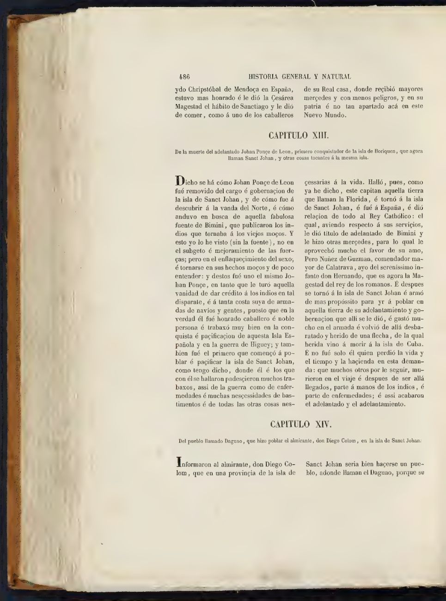
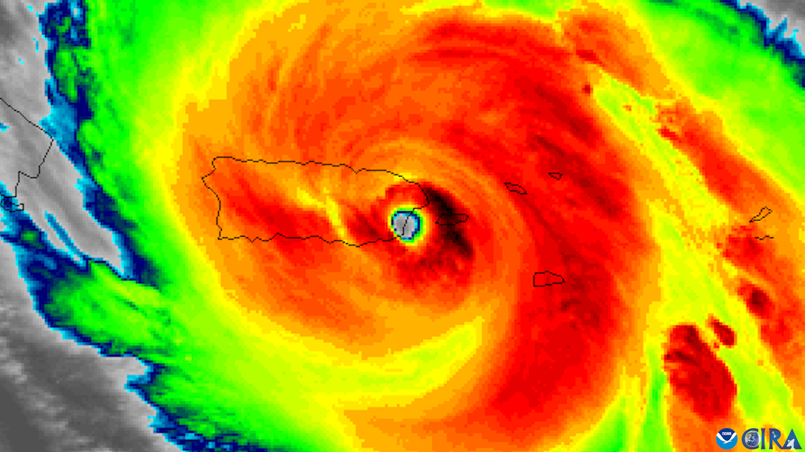
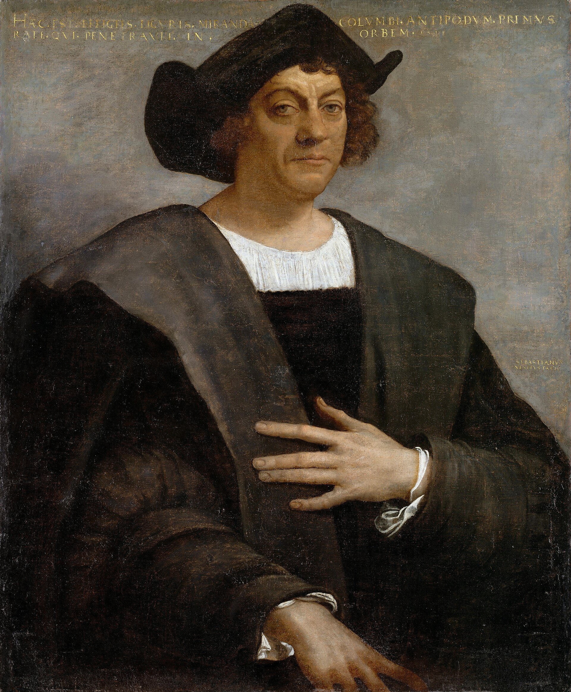
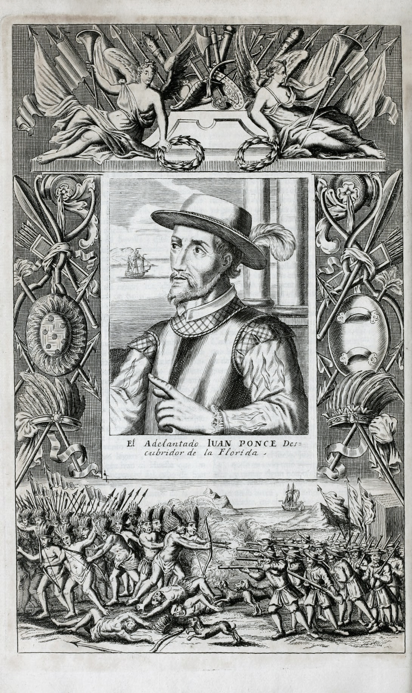
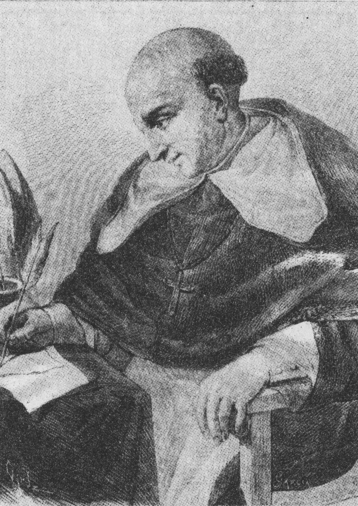
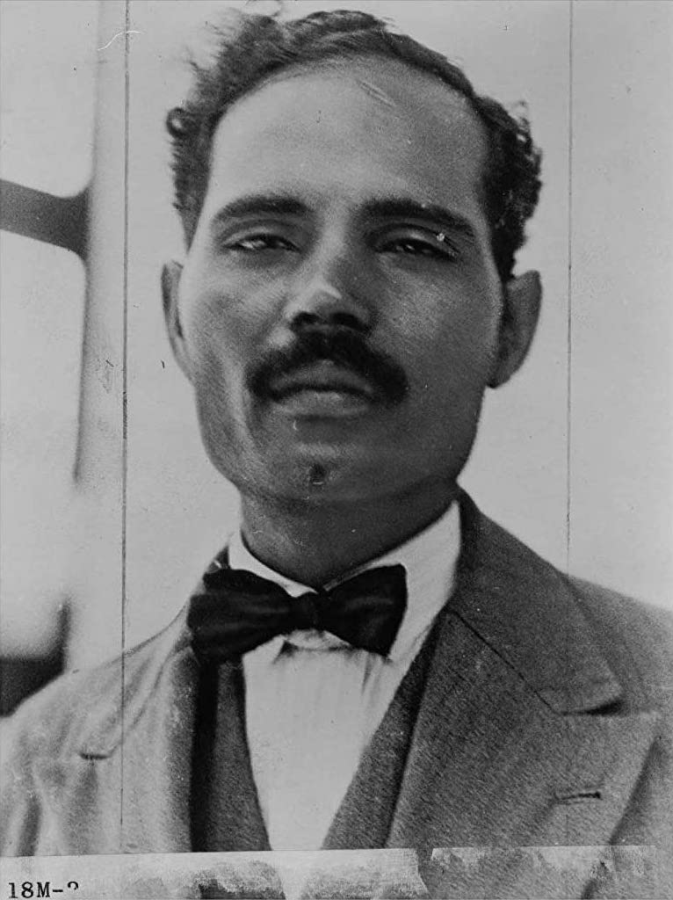
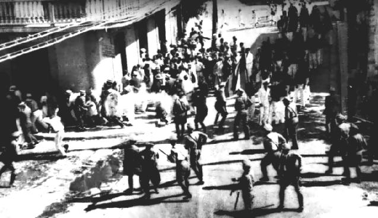
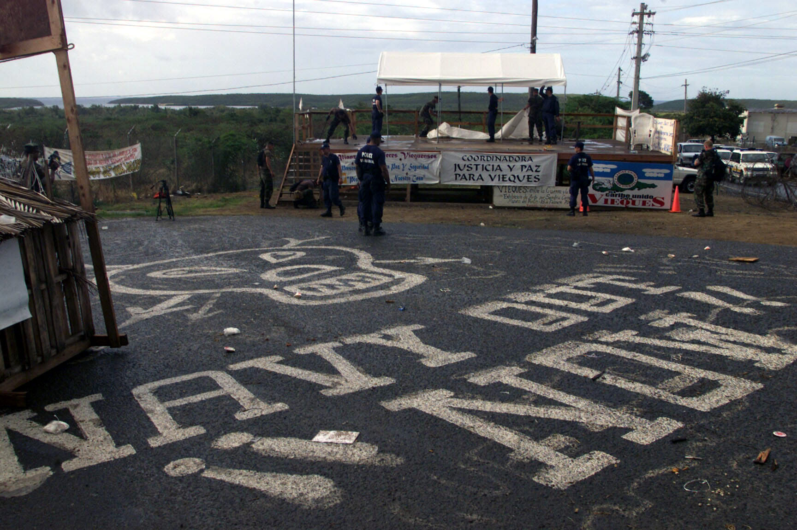

The colonial record
Not opinion, not folklore — every line below traces to a specific act of Congress, a Supreme Court ruling, or a government report. This is the paper trail behind why Arecibo, and every town like it, ended up the way it did.
What this page actually is, in plain terms
Here's the simplest way to picture the last 500 years of Puerto Rico's history: the island has never governed itself. Not once, not for a single year. Spain ran it as a colony for about four centuries, then the United States took it by force in 1898 and has run it as a territory ever since — over 125 years now, and counting. Two different foreign powers, one after another, and the people actually living on the island were never the ones making the final call on their own government.
That's not an opinion or a grievance dressed up as history — it's a legal fact you can trace document by document, and that's exactly what this page does: it walks through the actual laws, court rulings, and events, one era at a time, that explain why the island still doesn't fully govern itself today. Picture it like a chain, link by link: an invasion, then a law, then a court ruling that made the law stick, then another law building on that ruling, all the way to right now. Nothing on this page is asking you to take a side on what Puerto Rico's status should be — it's just laying out, plainly, what actually happened and under what authority, so you can see the chain for yourself.
How Spain got involved, and what it did once it was here
Columbus's second voyage sighted the island in November 1493, but Spain did not actually settle it until 1508, when the crown sent Juan Ponce de León — already a veteran of the brutal conquest of Hispaniola — to establish a colony. Ponce de León first got the island's own paramount cacique, Agüeybaná, to permit a Spanish settlement peacefully. That peace lasted only a few years, once the real purpose of the colony became clear: gold.
The Spanish crown's interest in the island was almost entirely extractive from the start. Ponce de León founded Caparra in 1508 (moved to the site of modern San Juan in 1521) specifically to organize gold panning in the island's rivers, using Taíno labor. In 1509 and 1510, the crown formalized the repartimiento — a legal "distribution" of the island's entire Taíno population among Spanish colonists, assigning specific named caciques and their people to specific Spanish masters. This became the encomienda system: colonists were nominally responsible for converting the people assigned to them to Christianity, in exchange for unlimited claim on their forced labor. In practice it was a slavery system in everything but name — families and villages broken up and reassigned as property, worked in the gold-panning rivers and in agriculture with no wage and no right to refuse.
The human cost was immediate and severe. Overwork, malnutrition, and imported disease the population had no immunity to killed Taíno people by the thousands within a few short years of the encomienda's start — a demographic collapse contemporary Spanish chroniclers themselves documented, even as their own crown's policy caused it. In 1511, the cacique Agüeybaná II organized the island's Taíno chiefdoms into a coordinated uprising, killing a number of Spanish colonists in the first large-scale armed indigenous resistance to Spanish rule anywhere in the Americas. Ponce de León's forces suppressed it later that year, and the encomienda system continued afterward largely unchanged.
As the Taíno population continued to collapse under the weight of the system built to exploit it, the Spanish crown's answer was not to end forced labor — it was to import a new supply of it. Official royal authorization for transporting enslaved Africans directly to the Spanish Caribbean colonies came in 1513, and Puerto Rico received its first documented enslaved Africans within years of that authorization, beginning a new and even longer chapter of forced labor once the gold-panning economy gave way to sugar cultivation later in the 1500s. The fortifications later built to defend the colony — including the massive stone walls of El Morro and San Cristóbal in San Juan, among the largest Spanish military engineering projects anywhere in the New World — were themselves built substantially with forced and enslaved labor over the following two centuries.
For the next roughly 300 years, Puerto Rico functioned within Spain's colonial system primarily as a fortified military outpost guarding the sea route to the more lucrative colonies of Mexico and South America, and as a source of sugar, coffee, and tobacco grown on enslaved and later poorly-paid labor, with wealth extracted through a rigid trade monopoly (all legal trade had to pass through Spain itself for most of this period) and a colonial administration where locally-born Puerto Ricans, regardless of wealth, had little real political power compared to officials sent from Spain. Slavery itself was not abolished on the island until 1873 — one of the last places in the hemisphere to end it, and only 25 years before Spain lost the island entirely to the United States in 1898.

Ponce de León, follow the actual man
Juan Ponce de León wasn't a distant colonial administrator signing papers from Spain — he was on the ground, personally, for all of it. He arrived on Columbus's second voyage in 1493 as a young soldier, and made his name first as a commander in the brutal conquest of Hispaniola under Nicolás de Ovando, one of the most violent phases of the entire early conquest. Puerto Rico wasn't his first island; it was his second act, using tactics he'd already learned.
He didn't just authorize the repartimiento and encomienda system described above — as the island's first governor, he personally organized it: which Spanish colonist got which cacique's people, where the gold-panning operations went, how the labor was extracted. When Agüeybaná II led the 1511 uprising, Ponce de León personally led the military response that crushed it. Every step of the system that broke the island's Taíno population in a single generation ran through him directly.
He didn't keep power long. Christopher Columbus's own son, Diego Columbus, inherited a hereditary claim to govern all Spanish territory his father had found, including Puerto Rico, and used it to force Ponce de León out as governor in 1511–1512 — a straight power struggle between two colonizers over who got to control the island and its people, with no Taíno voice in the outcome either way. Pushed out of Puerto Rico, Ponce de León spent his final years chasing the next conquest: an expedition to what's now Florida in 1513 (the same year Spain formally authorized transporting enslaved Africans to its Caribbean colonies, discussed above), searching for land, gold, and status, not literally a "fountain of youth" — that detail was attached to his legend only after his death. He returned to Florida in 1521 to try to found a colony there too, and was struck by a native Calusa arrow during the fighting that followed. He died of the wound in Cuba shortly after — the same basic pattern of violence he'd built his whole career on, turned back on him at the very end.
Columbus opened the door in 1492–93; Ponce de León is the one who actually walked through it into Puerto Rico and built the machine that ran the island for the next several centuries. Both men are treated in most popular history as explorers. The documented record — the repartimiento, the encomienda, the crushed uprising, the imported slave labor that followed — says something closer to architect and enforcer.
Where they were actually going, and in what order
Columbus's first voyage (1492) never reached Puerto Rico at all. It made landfall in the Bahamas (an island he named San Salvador, likely modern Guanahani), then moved to Cuba, then to Hispaniola — where he left 39 men behind at a fort called La Navidad and sailed home. Puerto Rico wasn't part of this trip.
Columbus's second voyage (1493) is the one that actually reaches this family's history. Sailing with a much larger fleet, he made landfall first at Dominica, then moved north through the Lesser Antilles in sequence — Marie-Galante, Guadeloupe, Montserrat, Antigua, and the Virgin Islands — before sighting Puerto Rico on 19 November 1493. There was no landing party left behind and no settlement built; the fleet anchored briefly, took on fresh water, and moved on. From Puerto Rico, Columbus continued to Hispaniola, where he found La Navidad burned and all 39 men dead, killed by Taíno resisting exactly the abuses this island's own record would repeat fifteen years later. He founded a new settlement, La Isabela, and that failure — not Puerto Rico — is where Spain's real colonial administration in the Caribbean actually began.
Ponce de León's own path ran through Hispaniola first, not Puerto Rico. He arrived as a soldier on that same 1493 voyage, then spent roughly fifteen years in Hispaniola's conquest — commanding troops that put down the Higüey rebellion around 1504, which earned him the governorship of that eastern province. It was from there, already an experienced and violent colonial administrator, that he heard of gold on the neighboring island the Spanish called San Juan Bautista. He got permission from Hispaniola's governor, Nicolás de Ovando, sailed to Puerto Rico, and landed near what's now Aguada or Aguadilla on the island's west coast in 1508 — a full generation into Spain's colonization of the Caribbean, not the beginning of it.
After Puerto Rico, forced out by Diego Columbus in 1511–12, Ponce de León sailed north in 1513 through the Bahamas looking for a rumored island called Bimini, and became the first documented European to reach Florida instead — sighting land in early April 1513 near where modern St. Augustine now sits, naming the whole territory La Florida, before charting much of the coast southward around the peninsula and the Dry Tortugas. He returned to Puerto Rico afterward.
The 1521 expedition, in real detail. This was a genuine colonization attempt, not another exploring trip — two ships, roughly 200 colonists, priests, farm animals, and seed, sent under his own royal grant to actually settle the land he'd charted eight years earlier. He landed on Florida's southwest Gulf coast, in the territory of the Calusa — a powerful, organized nation who had already turned back earlier Spanish contact and were not interested in a second one. Shortly after the landing party went ashore, the Calusa attacked. Ponce de León was struck by an arrow, the expedition collapsed, and the survivors sailed for Spanish Cuba. He died of the wound in Havana not long after, in July 1521.

Oviedo's own account is unusually direct for the era: he calls the whole Bimini "fountain of youth" story a disparate — an absurdity — that Ponce de León fell for by trusting what Taíno informants told him, even while praising him elsewhere as an honorable and capable soldier. Oviedo's own words on the end of it, in the original Spanish: "gastó mucho en el armada y volvió de allá desbaratado y herido de una flecha, de la qual herida vino á morir á la isla de Cuba" — "he spent heavily on the fleet and returned from there defeated and wounded by an arrow, from which wound he came to die on the island of Cuba." Oviedo adds that Ponce de León wasn't the only one who lost everything chasing that expedition — many of the men who followed him died too, some at the hands of the Calusa, some from disease, closing the chapter with a line that reads almost like an epitaph: "É assi acabaron el adelantado y el adelantamiento" — "And so ended the adelantado, and his governorship, together."
One thing worth being precise about: Ponce de León did not found St. Augustine. He never built any lasting settlement in Florida at all — both his 1513 landing and his failed 1521 colonization attempt came and went without anything permanent left behind. The actual city of St. Augustine wasn't founded until 1565, by a different Spaniard, Pedro Menéndez de Avilés, sent specifically to wipe out a French Protestant colony nearby and secure Florida for Spain — 44 years after Ponce de León had already died. St. Augustine is real and important on its own terms: it's the oldest continuously occupied European-founded city anywhere in what's now the United States, 42 years older than Jamestown and 55 years older than Plymouth. Ponce de León's actual legacy in Florida is the name and the first sighting, not the city itself — the two get folded together in popular memory, but the documented record keeps them separate by nearly half a century.
A second thing worth being precise about: Columbus had nothing to do with Florida at all. Columbus died in 1506, seven years before Ponce de León ever sighted Florida in 1513, and Columbus's own four voyages (1492–1504) never went anywhere near it — his farthest points north were Cuba and the Bahamas on the first voyage; everything after that turned south, toward Central and South America. Florida is entirely Ponce de León's own find, on his own expedition, well after Columbus was gone. What actually connects the two men isn't Florida — it's Hispaniola and Puerto Rico: Ponce de León crossed the Atlantic on Columbus's own second voyage in 1493 as a young soldier and learned the conquest trade inside Columbus's own colonial system there, years before he ever struck out on his own.
Laid out in order: Bahamas → Cuba → Hispaniola (1492, Columbus alone) → Dominica → the Lesser Antilles → Puerto Rico → Hispaniola again (1493, both men together) → fifteen years in Hispaniola (Ponce de León) → Puerto Rico (1508, Ponce de León's own conquest) → the Bahamas → Florida (1513) → Florida again (1521, where he died). Puerto Rico was never the first stop for either man — it was a later target, reached only after the pattern had already been set and proven on other islands first.
Spain's actual order of conquest — who fell first
Puerto Rico wasn't just late for Columbus and Ponce de León personally — it was late for Spain's whole colonial project. Here's the real sequence, island by island and territory by territory, in the order Spain actually took them:
1. Hispaniola, 1493–96. The first real target. After the 1492 La Navidad settlement was wiped out, Columbus founded La Isabela in 1493 on his second voyage, then in 1496 his brother Bartholomew founded Santo Domingo — the first permanent European city anywhere in the Americas, and the base every later conquest launched from. This is where Spain built its actual administrative machine: the encomienda system, the first colonial courts, the first bishopric. Everything that later happened to Puerto Rico was rehearsed here first, on a much larger population, for over a decade before Ponce de León ever sailed.
2. Puerto Rico, 1508–09. The second major island taken, and only because Hispaniola's colonists had already exhausted its easy gold and were actively looking for the next island to exploit. Ponce de León's expedition wasn't a discovery — it was an expansion, launched by an already-established colonial government looking for more.
3. Jamaica, 1509. Taken almost simultaneously with Puerto Rico, by Juan de Esquivel, under the same Hispaniola-based authority. Jamaica's Taíno population suffered the same repartimiento/encomienda pattern and the same collapse.
4. Cuba, 1511–15. The largest island in the Caribbean, conquered last among the big four, by Diego Velázquez de Cuéllar — sailing from Hispaniola with soldiers who included a young Hernán Cortés. Cuba's conquest included the killing of the cacique Hatuey, who had fled Hispaniola's encomienda system only to be captured and burned at the stake in Cuba — a direct, documented link between what happened on one island and what followed on the next.
5. The mainland, 1510s onward. Only after all four major Caribbean islands were under Spanish control did the conquest turn to the mainland — Balboa crossing Panama to reach the Pacific in 1513, then Cortés into Mexico in 1519, then Pizarro into Peru in 1532. The islands weren't a footnote to the "real" conquest of Mexico and South America; they were the training ground, the supply base, and the proving ground for the same encomienda system used everywhere that followed.
The order matters: Hispaniola → Puerto Rico & Jamaica (roughly together) → Cuba → the mainland. By the time Spain reached Mexico's much larger, wealthier empires, it had already spent nearly three decades perfecting the exact playbook — repartimiento, encomienda, forced labor, imported disease, crushed resistance — on Caribbean islands and their people first.
What Spain wrote down about the people it enslaved
Spain's colonial legal code governing slavery, the Código Negro Español of 1789, formally regulated (while never seriously restricting) how enslaved people in Puerto Rico and Spain's other colonies could be bought, sold, punished, and worked. An 1815 royal decree, the Real Cédula de Gracias, opened the island to non-Spanish Catholic immigration and land grants specifically to grow the plantation economy — and with it, the demand for enslaved labor grew alongside the sugar boom that decree helped create. By the early 1800s, the colonial government required something it hadn't in earlier centuries: a formal, named accounting of exactly who it held enslaved.
That accounting survives. The Registro Central de Esclavos (Central Slave Registry) was a Spanish colonial census of every enslaved person on the island, part of the machinery of Spain's own gradual-abolition laws in the years before final emancipation in 1873. A digitized copy of the District 1 registry from 1872 — one full year before abolition — is now archived off-site alongside this family's research. It is not a summary or a secondary account; it is the actual Spanish colonial paperwork itself, page after page of individual entries, each one recording a real person's name, the name of the person who claimed to own them, their town, a Spanish colonial racial classification (negro, mulato, and similar terms used at the time), their age, their parentage, and the names of their own children — because under Spanish colonial law, children born to an enslaved mother were themselves born enslaved, and the crown's own bureaucracy tracked that fact by name, generation after generation, right up until the year before it finally ended. Reading it is a different kind of evidence than a history book's summary of slavery ever can be: it is Spain's own hand, writing down, one line at a time, exactly who it held as property.
Final abolition came on 22 March 1873, under Spain's short-lived First Republic — late by any regional comparison, and only after decades of gradual measures (like the registry above) designed to delay full emancipation rather than hasten it.
Why Spain believed this was allowed
Nobody in Spain's government woke up one day and simply decided to ignore morality — they built an actual legal and religious case for it, piece by piece, and it's worth knowing what that case actually was, because it changed twice over three centuries and each version explains a different part of what happened.
First justification: the Pope gave permission. In 1455, Pope Nicholas V issued Romanus Pontifex, a papal bull authorizing Portugal (and soon Spain, through similar bulls) to conquer and enslave non-Christian peoples encountered in exploration — framed as a religious mission, converting souls, with slavery as an acceptable side effect of bringing Christianity to people who didn't have it. This is the root legal authority Spain leaned on for the entire early colonial period: not a secular property claim, but a religious one.
Second justification, aimed specifically at the Taíno and other Indigenous peoples: they weren't fully rational. Spanish theologian Juan Ginés de Sepúlveda argued, drawing on Aristotle's ancient idea of "natural slavery," that Indigenous Americans were naturally suited to servitude and that conquering and controlling them was therefore just — not injustice, but their correct place in a natural order. This wasn't a fringe view; it was argued formally, in front of the Spanish crown, at the Valladolid debate (1550–51) — a real, convened royal hearing on the question of whether Indigenous peoples had full rational souls and could be justly enslaved.
The Valladolid debate had another side, and it mattered directly to Puerto Rico: Bartolomé de las Casas — the same eyewitness priest already cited elsewhere on this page for documenting the destruction of the Indies — argued the opposite: that Indigenous people were fully rational, fully human, and that the conquest itself had been a moral catastrophe. He won the argument in the sense that Spain never issued an official doctrine declaring Indigenous people subhuman. But Las Casas's own remedy, earlier in his life, was to suggest replacing Indigenous forced labor with enslaved Africans instead — a position he later regretted and renounced in writing, but one that had already helped legitimize exactly the system this page documents. The debate over Indigenous personhood, in other words, is part of the same history that produced African slavery in Puerto Rico, not a separate, unrelated argument.
Third justification, once the system was already running on both Indigenous and African labor: race itself. As the earlier religious and legal arguments wore thin over the following centuries, colonial society developed its own racial ideology — a hierarchy that treated Africans and their descendants as inherently suited to enslavement, encoded directly into law by the 1789 Código Negro Español discussed above. This is the version of the justification that lasted longest, because it didn't depend on a specific Pope's bull or a specific theologian's argument — it was baked into the everyday legal and social structure of the colony itself, which is exactly why it took until 1873 to actually end.
The transatlantic slave trade, and did ships land in Puerto Rico
Yes — and this family's own archived record is direct proof of it, not just a general historical claim. The 1872 Registro Central de Esclavos, archived in full on this site, doesn't only record people born on the island. Reading the birthplace field across the 715-page District 1 register: 664 people are recorded as born in Puerto Rico itself, but 149 are recorded as born in Africa directly — real, individually named survivors of the transatlantic crossing itself, still alive and still enslaved in this one district alone, one year before abolition. A handful more are recorded as born in Venezuela and Curaçao, showing the wider regional trade network Puerto Rico was plugged into, not an isolated system.
The mechanics of how they got there changed over time. For most of the 1500s and 1600s, Spain's trade rules were deliberately restrictive: nearly all legal shipping, including the slave trade, had to route through a small number of licensed ports under a system called the asiento — a contract the Spanish crown granted to specific merchants or even other European powers (at different points, Portuguese, Dutch, French, and British companies all held the asiento) for the exclusive right to supply enslaved Africans to Spanish America. Puerto Rico, small and comparatively poor next to Mexico or Peru, was often a secondary stop rather than a primary port — enslaved people frequently arrived by way of larger hubs like Cartagena or Santo Domingo first, then were moved on to smaller colonies including Puerto Rico.
That changed directly because of decisions already covered on this page. The 1789 Código Negro Español that regulated enslaved people's legal status also relaxed restrictions on who could import them. The 1815 Real Cédula de Gracias deliberately opened the island's ports and economy to grow the plantation system — and with that policy, direct arrivals into San Juan, the island's main port, increased substantially through the early-to-mid 1800s as the sugar economy this page already describes expanded. By the time of the 1872 registry, Puerto Rico had spent decades receiving enslaved people directly, not just secondhand through other colonies — and the 149 African-born names in that one district's register are the direct documentary result of that traffic, sitting in this family's own archive today.
Columbus, Mexico, and how Spain's empire ended up handing Puerto Rico to the US
Columbus himself wasn't working for a country called Spain in the modern sense — he was funded personally by the Catholic Monarchs, King Ferdinand of Aragon and Queen Isabella of Castile, who had just finished uniting their kingdoms and expelling the last Muslim rulers from the Iberian peninsula in the same year, 1492. They funded his westward voyage looking for a trade route to Asia, not out of any interest in the Caribbean itself. What he actually found — land Europeans didn't know existed — became the opening act for three centuries of Spanish colonization across nearly the entire Western Hemisphere, and his second voyage in 1493 is the same voyage that put Boriken on a European map for the first time, discussed in full on this family's own Boriken page.
At its height, the Spanish empire in the Americas stretched from California down through Mexico, Central America, most of South America, and across the Caribbean — Puerto Rico was always a small, comparatively poor piece of a much larger empire, valuable mainly for its strategic port and military position, not its wealth. That empire started coming apart from the mainland outward: between roughly 1810 and 1825, most of Spain's mainland American colonies — Mexico, and nearly all of South America — fought and won their own wars of independence, leaving Spain, by the mid-1800s, holding onto only a handful of colonies: Cuba, Puerto Rico, and the Philippines on the other side of the world.
Meanwhile, a separate and earlier conflict shows the same pattern that would later hit Puerto Rico, just aimed at Mexico instead of Spain directly: the Mexican-American War (1846–1848). The United States, driven by the belief that it was destined to expand across the continent (widely known at the time as "Manifest Destiny"), went to war with Mexico and won decisively. The Treaty of Guadalupe Hidalgo that ended it forced Mexico to cede roughly half its national territory to the US — what's now California, Nevada, Utah, most of Arizona and New Mexico, and parts of Colorado and Wyoming. It's the same basic move the US would make against Spain fifty years later, just against a different, weaker neighbor first: use military force to take a huge amount of land from a country that couldn't stop it, then absorb the people living there into a country that hadn't asked them if they wanted in.
How a young country got strong enough to actually do this: at its founding, the US wasn't remotely capable of fighting a European empire and winning — that changed over roughly the next 120 years, and it changed for concrete, traceable reasons. After the Civil War (1861–65), the country industrialized at enormous speed — railroads, steel, mass manufacturing — turning it from a mostly agricultural nation into one of the world's largest industrial economies within a generation. Starting in 1883, Congress funded a "New Navy" of modern steel warships to replace the country's outdated wooden fleet, directly influenced by naval strategist Alfred Thayer Mahan's argument that a nation needed a powerful navy and overseas coaling stations to be a real world power — the exact fleet that would fight Spain fifteen years later. And by 1890, the US Census Bureau declared the western frontier officially "closed" — no more open land to expand into within the continent itself — which pushed a lot of that same expansionist energy outward, overseas, instead. By 1898, all three pieces were in place: the industrial money to build a navy, the navy itself, and a political class already primed to look past the continent's own borders for the next target.
By 1898, Spain's remaining empire was down to Cuba, Puerto Rico, and the Philippines — and Cuba had already been fighting its own war of independence against Spain since 1895. The United States intervened, officially over the sinking of the USS Maine in Havana harbor (still disputed as accidental or not) but really at the intersection of American sugar and business interests in Cuba, sympathy for Cuban independence, and a US military and political class that had spent the prior half-century getting comfortable with exactly the kind of territorial expansion the Mexican-American War had already proven the country was willing to use force for. The resulting Spanish-American War lasted only a few months and ended in a total Spanish defeat. The Treaty of Paris (1898) that closed it is the exact document that appears at the top of this page: Spain gave up Cuba and ceded Puerto Rico, Guam, and the Philippines directly to the United States — the same move, the same imbalance of force, the same absence of any vote by the people actually living on the land, playing out one more time, on this family's own island.
The invasion, and the law that followed it
The Foraker Act is archived on this site in full — 31 Stat. 77, Chapter 191, ten pages, signed 12 April 1900. Everything quoted below is from that statute. It is more damning than any summary of it.
Start with the title
The law is called “An Act Temporarily to provide revenues and a civil government for Porto Rico, and for other purposes.”
Temporarily. That word is in the statute's own title. This arrangement governed the island for seventeen years, until 1917 — and the territorial status it created is still in place 126 years later. Note also what comes first in the title: revenues, then government.
The invasion itself
US forces landed at Guánica on 25 July 1898, during the Spanish-American War. Organized resistance was brief. Spain ceded the island under the Treaty of Paris, signed 10 December 1898 — a negotiation with no Puerto Rican party to it. Article IX of that treaty left the civil rights and political status of the inhabitants to be determined by the US Congress. That blank has never been filled in.
A military government then ran the island from 1898 to 1900. Its district-by-district reports — including a chapter on Arecibo — are archived here, as is the 1900 survey commissioned for President McKinley.
The law devalued the money — in writing
This page has long said the peso was converted at roughly sixty cents. That conversion is in the statute itself. The Foraker Act directs redemption of Puerto Rican coin:
“…at the present established rate of sixty cents in the coins of the United States for one peso of Porto Rican coin, and for all minor or subsidiary coins the same rate of exchange shall be applied.”
Every peso of savings, every peso of land value, every peso a coffee farmer in Lares or Añasco had put away, was legislated down to sixty cents by an act of Congress. Not a market movement. A line in a law. This is the mechanism behind the collapse of the coffee highlands documented further down this page.
It taxed Puerto Rico as if it were half-foreign
The act imposed duties on goods moving between Puerto Rico and the United States:
“…shall be entered at the several ports of entry upon payment of fifteen per centum of the duties which are required to be levied, collected, and paid upon like articles of merchandise imported from foreign countries…”
Fifteen percent of the foreign rate — on trade within what was supposedly the same country. That tariff is precisely what a merchant challenged when his oranges were taxed, producing Downes v. Bidwell and the entire Insular Cases doctrine. The Foraker Act is what made that case possible.
It invented a nationality that belonged nowhere
The act did not make Puerto Ricans US citizens. It created something new:
“…shall be deemed and held to be citizens of Porto Rico, and as such entitled to the protection of the United States…”
Citizens of a place that was not a country, holding a status with no sovereign behind it — entitled to protection, but not membership. Those who wished to remain Spanish subjects had to declare it by 11 April 1900. Everyone else became a citizen of an island that was legally owned by a nation they were not citizens of. That lasted until 1917.
The government it built
Elected by Puerto Ricans: a House of Delegates of thirty-five members, elected every two years across seven districts. That was the entire democratic component.
Appointed by the US President: the governor, and the Executive Council — which served as both the upper legislative chamber and the cabinet. An appointed body sat as half the legislature.
A Resident Commissioner went to Washington at $5,000 a year, entitled to “official recognition” by federal departments — and to no vote.
And the clause that made all of it provisional
“…all laws enacted by the legislative assembly shall be reported to the Congress of the United States, which hereby reserves the power and authority, if deemed advisable, to annul the same.”
Whatever the thirty-five elected delegates managed to pass had to be reported to Washington, which reserved the right to erase it. The same clause reappears in the 1917 act. Seventeen years apart, two Congresses wrote down the same thing: you may legislate, and we may annul.
What is still missing
Update — the Treaty of Paris is now archived too. The full text is on file (Yale Law School's Avalon Project transcription; a scanned facsimile of the signed original is still worth obtaining, so that narrower item stays on Open Leads). Two articles matter, and here they are verbatim.
Spain relinquishes all claim of sovereignty over and title to Cuba.
Spain cedes to the United States the island of Porto Rico and other islands now under Spanish sovereignty in the West Indies, and the island of Guam in the Marianas or Ladrones.
The civil rights and political status of the native inhabitants of the territories hereby ceded to the United States shall be determined by the Congress.
Now read Articles I and II together, because they sit side by side in the same document.
Cuba was relinquished — Spain gave up its claim, and Cuba went on to independence. Puerto Rico was ceded to the United States — handed over as property, in the same sentence as Guam.
Two adjacent articles. Two different verbs. Two entirely different futures, decided in a room where no Cuban and no Puerto Rican sat. That single difference in wording is why Cuba is a country and Puerto Rico is a territory.
One sentence in Article II. An island and its people listed alongside Guam like items in an inventory, handed from one empire to another. No Puerto Rican signed it, and none was asked.
And Article IX is the sentence the next 128 years hang on.
Not determined by the treaty. Not determined by the inhabitants. Determined by the Congress — a body Puerto Rico has never had a vote in. Everything else on this page is downstream of that one clause: the Foraker Act, the Insular Cases, the citizenship, PROMESA, all of it flows from Congress being handed a blank check in 1898 that it has never filled in.
The Insular Cases — in the Court's own words
This is the doctrine everything else on this page rests on, so it should not be summarized. The full 148-page opinion in Downes v. Bidwell, 182 U.S. 244 (1901), is archived on this site. Every quotation below is from that text.
It started with oranges
The case was not a grand constitutional test. A merchant named Downes shipped oranges from Puerto Rico to New York and was charged import duties — duties that would be illegal between two parts of the same country, because the Constitution requires duties to be uniform throughout the United States. So the question became: is Puerto Rico part of the United States or not?
The Court's answer created a category that had never existed in American law.
The holding
Chief Justice Fuller, dissenting, described what the majority had just done:
“…there seems to be concurrence in the view that Porto Rico belongs to the United States, but nevertheless, and notwithstanding the act of Congress, is not a part of the United States, subject to the provisions of the Constitution…”
Belongs to, but is not part of. Owned, but outside. That is the unincorporated territory — and Puerto Rico is still in it, 125 years later.
Why — and here the Court says it plainly
The reasoning was not technical. It was racial, and it is on the page. From the concurrence of Justices White, Shiras, and McKenna:
“If those possessions are inhabited by alien races, differing from us in religion, customs, laws, methods of taxation and modes of thought, the administration of government and justice, according to Anglo-Saxon principles, may for a time be impossible… We decline to hold that there is anything in the Constitution to forbid such action.”
The Constitution could be withheld because the people were of “alien races.” That is not a modern historian's characterization. That is the holding's own justification, printed in the United States Reports.
And then this, from the opinion of the Court — the passage that is hardest to read:
“There are certain principles of natural justice inherent in the Anglo-Saxon character which need no expression in constitutions or statutes to give them effect or to secure dependencies against legislation manifestly hostile to their real interests.”
Read that again. The Court's reassurance to a colonized people was that they did not need written constitutional protection, because the people governing them were Anglo-Saxon and therefore inherently just. Their safeguard was the good character of their rulers. That was the guarantee. It is the entire colonial argument in one sentence, delivered by the Supreme Court of the United States.
What specifically was withheld
The Court sorted rights into those that follow the flag and those that do not. Among those that do not, in its own list: citizenship, suffrage, and the “particular methods of procedure pointed out in the Constitution, which are peculiar to Anglo-Saxon jurisprudence.” Jury trial sits in that last category.
It was 5–4
This did not come down unanimously. It was decided by one vote. The dissenters were Chief Justice Fuller and Justices Harlan, Brewer, and Peckham.
Harlan is worth naming twice. Five years earlier he had been the lone dissenter in Plessy v. Ferguson, the case that blessed “separate but equal.” Same Court, same era, same reasoning about who the Constitution is for — and the same justice objecting. One vote the other way in 1901 and this page would read very differently.
Then they locked it in
Dorr v. United States (1904) — the jury-trial right does not automatically extend to unincorporated territory. Archived here.
Balzac v. Porto Rico (1922) — the one that closed the door. Puerto Ricans had been made US citizens in 1917; Jesús M. Balzac, a newspaper editor prosecuted for criminal libel, argued that citizenship must bring the jury right with it. The Court said no: citizenship did not incorporate Puerto Rico and changed nothing about its constitutional status. Archived here.
Never overturned
The Insular Cases have never been reversed. They were relied on again in United States v. Vaello Madero (2022) — archived here, where the Insular Cases are named 23 times — to hold that Congress may exclude Puerto Rico residents from disability benefits.
In that case Justice Gorsuch wrote separately to say the Insular Cases were wrongly decided, rest on racist foundations, and should be overruled. The Court did not overrule them. A doctrine built on “alien races” and the “Anglo-Saxon character” is still good law, and it is still the reason for nearly everything else documented on this page.
The Jones–Shafroth Act, read line by line
Everything below comes from the statute itself — 39 Stat. 951, Chapter 145, H.R. 9533, Public No. 368, signed by President Woodrow Wilson on 2 March 1917 — which is archived in full on this site. Its official title is not about citizenship at all. It is “An Act To provide a civil government for Porto Rico, and for other purposes.”
First, the correction this page owed you. An earlier version of this entry said the 1917 act also created the shipping restriction. That was wrong. There are two different laws nicknamed “the Jones Act,” passed three years apart, named for two unrelated men. The Jones–Shafroth Act (1917) is the citizenship and government law, named for Representative William A. Jones of Virginia. The Merchant Marine Act (1920, 41 Stat. 988) is the shipping law, named for Senator Wesley L. Jones of Washington. Both are archived here separately. Conflating them is one of the most common errors made about Puerto Rico, and this page will not repeat it.
1. The citizenship — and the door out of it
Section 5 declared the people of Puerto Rico “citizens of the United States.” It was collective and automatic. But the statute wrote in an escape hatch, and the exact words a person had to swear are printed in the law:
“I, ____, being duly sworn, hereby declare my intention not to become a citizen of the United States as provided in the Act of Congress conferring United States citizenship upon citizens of Porto Rico…”
You had six months, and you had to say it under oath, in person, before the district court where you lived. Fewer than three hundred people did it. Those who did were not deported — they remained on their own island, now formally holding no nationality at all, and lost the right to vote or hold office. The law offered a choice whose only alternative was statelessness at home.
2. A bill of rights inside a statute — which tells you the Constitution did not apply
Section 2 of the act writes out a bill of rights: due process, equal protection, assistance of counsel, a speedy and public trial, confrontation of witnesses, no double jeopardy, no self-incrimination, bail, no imprisonment for debt, no ex post facto laws, just compensation for property taken.
Stop and ask why that was necessary. Those protections already exist in the US Constitution. Congress had to re-enact them by statute for Puerto Rico precisely because — under the Insular Cases described above — the Constitution did not follow the flag to an unincorporated territory. Rights that are inherent in a state had to be granted here, in ordinary legislation, by a Congress that could amend them later.
And note what is missing from that list: the right to trial by jury. Its absence was not an oversight. In Balzac v. Porto Rico (1922), archived here, the Supreme Court held that granting citizenship in 1917 did not incorporate Puerto Rico and did not extend the jury-trial right to it.
One more line worth reading closely: habeas corpus — the right to be brought before a court rather than held indefinitely — may be suspended “by the President, or by the governor.” A single appointed official could suspend it over the whole island.
3. What Puerto Ricans got to control, and what they did not
Elected by Puerto Ricans: a Senate of nineteen members and a House of Representatives — a real two-chamber legislature, the first elected upper house under US rule. Also a Resident Commissioner sent to Washington.
Appointed by the President of the United States: the governor. The auditor. The justices of the supreme court. The commissioner of education. The attorney general.
The veto: the governor could veto legislation the elected legislature passed. Above that sat the President.
And above all of it, in the statute's own words, Congress “hereby reserves the power to annul or modify the same.” Anything Puerto Rico's elected legislature enacted could be struck down by a Congress in which Puerto Rico had no vote.
That is the whole architecture in one sentence: you may elect a legislature, and we may overrule it.
Suffrage was also limited to men. Women in Puerto Rico did not get the vote until 1929, and then only if literate; universal women's suffrage came in 1935.
4. The timing nobody can explain away
The act was signed 2 March 1917.
The United States declared war on Germany 6 April 1917 — thirty-five days later.
The Selective Service Act followed on 18 May 1917, and the new citizens were subject to it. Roughly 18,000 Puerto Ricans served in the First World War.
Historians still argue over intent, and this page will not claim to settle it — Congress had debated Puerto Rican citizenship for years before 1917. What is not arguable is the sequence and its effect: men became eligible to be conscripted by a government they could not vote for, five weeks before that government went to war.
5. What it did not do — then or now
It did not give Puerto Rico a vote for President. It did not give Puerto Rico a voting member of Congress. It did not make the island a state or put it on a path to becoming one. It did not extend the Constitution in full. It did not end the territorial status — Balzac confirmed five years later that it had changed nothing structural.
And because the citizenship is statutory rather than constitutional — created by an act of Congress, not by the Fourteenth Amendment — it rests on a different legal footing than the citizenship of someone born in a state. It has never been upgraded in the 109 years since.
The men on the Who Served page registered for those drafts under this law.
Ponce, and the Nationalist uprising
Police fired on a civilian march in Ponce in 1937, killing marchers and bystanders. In 1950, an armed Nationalist uprising was met with mass arrests; some of the FBI's own surveillance files on independence activists from this period have since been declassified. Public Law 600, passed the same year, let Puerto Rico write its own local constitution — the island became a "commonwealth" in 1952, but stayed, and stays, an unincorporated territory under the Insular Cases.
PROMESA and the fiscal control board
Facing a debt crisis, Congress created a Financial Oversight and Management Board — seven members appointed by the US president, none elected by Puerto Ricans — with power to override the island's own elected government on budget matters. The Supreme Court upheld the board's structure in 2020, ruling that the Constitution's Appointments Clause doesn't restrict how a territorial board gets picked.
Hurricane Maria
An independent study commissioned by Puerto Rico's own government (George Washington University, 2018) put the excess death toll at roughly 2,975 — far above the government's initial count of 64. The power grid took nearly 11 months to fully restore: the longest blackout in US history.

Vaello Madero
The Supreme Court upheld a federal law that excludes Puerto Rico residents from Supplemental Security Income, even though they pay the same payroll taxes as everyone else. The majority opinion leaned directly on the territorial status the Insular Cases built over a century earlier.
Where it stands
Seven status referendums since 1967, no result binding on Congress — only Congress can change the island's status under the Constitution's territorial clause. Statehood, independence, free association, and the current commonwealth arrangement remain the options on the table, each with real, disputed consequences for citizenship, taxes, and federal benefits that Congress alone gets to decide.
What the invasion actually cost, on the ground
The eras above are the law. This section is what the law did to ordinary people — including, specifically, the coffee farmers this family descends from.
The self-government Puerto Rico already had — and lost
This is the piece almost nobody is taught, and it reframes everything else on this page. Puerto Rico was not a passive colony waiting to change owners in 1898. After decades of political organizing, Puerto Rican leaders won the Carta Autonómica (Charter of Autonomy) from Spain in November 1897 — genuine self-government, with its own legislature, authority over its own tariffs and commercial treaties, and voting representation in the Spanish parliament.
That autonomous government was seated in July 1898 — days before US troops landed at Guánica. It was dissolved by the occupation almost immediately.
Read plainly: Puerto Rico had more control over its own affairs under Spain in the summer of 1898 than it would have under the United States for the next fifty years — and, on the specific question of voting representation in the government that rules it, more than it has today, 127 years later. The island did not go from colony to freedom in 1898. It went from a colony that had just won self-rule to a territory that had none.
How the coffee highlands were destroyed — Añasco, Lares, Arecibo
This is the section that touches this family most directly. Under Spain, coffee was the island's high-value export, and it was grown in the mountain interior — Lares, Añasco, Utuado, and the highlands above Arecibo, precisely the ground the Arocho and Marrero lines come from. Within roughly a decade of the US takeover, that economy was gone. Four things hit at once, and three of them were policy:
1. Hurricane San Ciriaco, 8 August 1899. One of the deadliest storms in the island's recorded history. Thousands died. The coffee crop was destroyed — and so were the shade trees coffee requires, which take years to regrow.
2. The currency was devalued. The US converted the Puerto Rican peso at roughly 60 cents on the dollar. Every Puerto Rican's savings and land value were cut by nearly half overnight — at the exact moment US buyers arrived holding dollars.
3. The tariff wall was moved. Puerto Rico was pulled inside the US tariff system and out of its established European coffee markets. The US did not drink Puerto Rican coffee in comparable volume. Sugar, meanwhile, now entered the protected US market duty-free.
4. Credit collapsed. Ruined smallholders could not borrow to replant. Land moved to whoever still had capital.
The result was structural. Coffee is a smallholder crop — small family farms in the mountains. Sugar is a plantation crop requiring heavy capital and flat coastal land. As coffee died and sugar rose, large US-owned corporations consolidated enormous holdings. A 500-acre cap on corporate landholding existed on paper from 1900 and went essentially unenforced for decades.
Within a single generation, a population of independent farming families was converted into a landless wage-labor force. That is the event standing behind this family's own movement off the land — and eventually behind the move to New York. It was not simply a hurricane, and it was not personal failure. It was the predictable outcome of three deliberate policy decisions stacked on top of a natural disaster.
Fifty years of school in a language nobody spoke
From the beginning of the occupation, US administrators pursued Americanization through the schools. English was imposed as the language of instruction on an island where essentially nobody spoke it — not the children, not their parents, and in many cases not the teachers, who were expected to teach in it anyway.
The policy shifted repeatedly under successive US-appointed education commissioners, but for roughly the first half-century of US rule, Puerto Rican children were schooled in a language foreign to their own homes. Educational outcomes suffered accordingly, and generations lost ground that had nothing to do with ability. Spanish was not restored as the primary language of instruction until 1948 — fifty years in.
Operation Bootstrap — and the migration that was policy, not accident
Operación Manos a la Obra, launched in 1947, industrialized the island through tax exemptions for US manufacturers. It produced real factories, real jobs, and real growth — that part is not in dispute.
It also treated mass emigration as a deliberate safety valve. The government actively encouraged and facilitated migration to the mainland to relieve population pressure the industrial plan could not absorb. Roughly half a million Puerto Ricans left during the 1950s alone — overwhelmingly to New York.
That is the wave this family rode. The move to New York, told in the book as family history, sits inside a documented government policy that intended exactly that movement to happen. It was a personal decision made inside a channel that had been deliberately dug. Both things are true, and the second one is rarely mentioned to the families who moved.
Las Carpetas — roughly 75,000 secret files on ordinary people
For decades the Puerto Rican police, working with the FBI, maintained secret dossiers — carpetas — on citizens suspected of independence sympathies. In practice the category was interpreted broadly enough to sweep in teachers, union members, students, artists, journalists, and their relatives. Being surveilled required no crime, no charge, and no notice.
The program was exposed in 1987, when the Puerto Rico Supreme Court ruled it unconstitutional. Roughly 75,000 individual files were eventually acknowledged and returned to the people they described; some estimates run higher. Many Puerto Ricans learned only then that they had been watched for most of their adult lives — and, reading their own file, learned who had been reporting on them. Often neighbors. Sometimes colleagues, or family.
This ran concurrently with the Gag Law above. Between 1948 and 1957, it was simultaneously a felony to own a Puerto Rican flag and standard practice for the state to keep a file on you for caring about one.
Utuado — what happened after the bombing
The aerial bombing of Jayuya is noted above. What followed in Utuado belongs in the record with it, and it deserves to be told with names.
On 30 October 1950, Nationalists attacked the Utuado police station. When it was over, the National Guard ordered the nine surviving Nationalists to surrender. They did. The Guard marched them to the town plaza and made them remove their shoes, belts, and personal belongings, then took them behind the police station and opened fire on them with machine guns.
Five men were killed. Their names were:
Heriberto Castro · Julio Colón Feliciano · Agustín Quiñones Mercado · Antonio Ramos · Antonio González
The four who survived were seriously wounded. It is known as La Masacre de Utuado — the Utuado Massacre.
They had already given up. They had been made to take off their shoes. Then they were machine-gunned behind a police station by soldiers of the government whose citizens they were.
Taken together with Jayuya, this is the documented reality of October 1950: the United States used fighter aircraft and artillery against towns full of its own citizens, then executed prisoners who had already given up. Martial law was declared and roughly a thousand people were arrested, many under the Gag Law with no role in any violence. Mainland press coverage at the time was minimal, and the events were widely described as a local disturbance rather than what the record shows they were.
The 65th Infantry — the Borinqueneers
Puerto Ricans have fought in every US war since citizenship and the draft arrived together in 1917. The 65th Infantry Regiment — the Borinqueneers — was the segregated Puerto Rican unit, and it served with distinction in World War II and Korea.
In 1952, after being committed to costly assaults under a command that had broken up the unit and replaced its Puerto Rican leadership, dozens of its soldiers were court-martialed for refusing orders — the largest mass court-martial of the Korean War. The convictions are now widely regarded as an injustice compounded by discrimination and by orders given in English to soldiers who did not all speak it.
Congress awarded the regiment the Congressional Gold Medal in 2014. The Army issued a formal apology in 2016 — sixty-four years after the fact, when nearly everyone owed it was gone.
The men listed further down this page registered for those drafts. They were made eligible to die for a government none of them could vote for. That is not a rhetorical flourish; it is the plain legal situation, then and now.
The 1897 Charter of Autonomy. Spain's royal decree of 25 November 1897 (Carta Autonómica), granting Puerto Rico its own legislature, tariff authority, and voting representation in the Spanish Cortes. The autonomous cabinet was seated 17 July 1898; US forces landed at Guánica 25 July 1898. Both the decree and the Treaty of Paris (10 December 1898) are public primary documents. Status: decree text not yet archived here — open lead.
The coffee collapse. Hurricane San Ciriaco, 8 August 1899, is documented in US War Department reports of the military government then administering the island. The peso conversion at roughly 60 cents was set by order of that same US military government (1899). The tariff realignment is in the Foraker Act (1900), already cited on this page and archived. The 500-acre corporate landholding cap is in the Joint Resolution of 1900; its non-enforcement for decades is documented in later Congressional and Puerto Rico government reviews. Export composition shifting from coffee to sugar is visible in the US census and customs series for the island, 1899–1930. Status: Foraker Act archived; War Department reports and customs series not yet archived — open lead.
English-language schooling. Documented in the annual reports of the US-appointed Commissioner of Education for Puerto Rico across this period. Spanish was restored as the language of instruction in 1948 under Commissioner Mariano Villaronga. Status: annual reports not yet archived — open lead.
Operation Bootstrap and the migration. The Migration Division of Puerto Rico's own Department of Labor was established expressly to manage and assist migration to the mainland — its existence and mandate are the proof that the movement was policy, not accident. Scale (roughly half a million during the 1950s) comes from US census counts of the Puerto Rico–born mainland population, 1950 vs. 1960. Status: census series publicly available, not yet archived here — open lead.
Las Carpetas. Ruled unconstitutional by the Supreme Court of Puerto Rico in Noriega v. Hernández Colón (1987–88); files were subsequently returned to the individuals named in them by order of that court. The roughly 75,000 figure comes from the court-supervised return process; some estimates run higher. Status: opinion text not yet archived — open lead.
Utuado, 1950. Recorded in contemporary accounts and in subsequent Puerto Rico government and academic reviews of the October 1950 uprising. This one carries the ordinary caution that applies to any event where the state investigated itself: the killings of surrendered prisoners are well established, exact counts vary between accounts. Status: no single archived primary document yet — open lead, and flagged here rather than smoothed over.
The 65th Infantry. The 1952 courts-martial are US Army records. The Congressional Gold Medal is Public Law 113-120 (2014) — a statute, fully public. The Army's formal apology was issued in 2016. Status: Public Law 113-120 is a citable statute; court-martial records not yet pulled — open lead.
Every item marked open lead above has been added to the Open Leads page so it stays visible until the actual document is in hand. That is the same standard the rest of this archive is held to: a claim with a named source that hasn't been pulled yet is honest; a claim with no source at all doesn't go up.
The land, right now
This isn't history. This is happening while this page is being written — and unlike most of what's above, a good part of it was done by Puerto Rico's own legislature, not Washington. That distinction is kept honest below.
Act 22, now Act 60 — move here, pay almost nothing
In 2012 Puerto Rico's own legislature passed Act 22, folded in 2019 into Act 60. The offer: a person who moves to Puerto Rico, and who was not a resident during a long look-back window, pays 0% Puerto Rico tax on capital gains, dividends, and interest.
Stack that on the federal rule already described on this page — residents generally owe no federal income tax on Puerto Rico–source income — and a wealthy newcomer can end up paying close to nothing, while the Puerto Rican born there pays ordinary tax on ordinary wages.
Rather than sunset, the program was extended to 2055, with a 4% rate introduced for applicants starting in 2027 — the first real change to a regime that had been tax-free. Anyone who gets in before the end of 2026 can still lock in 0%.
Be precise about blame here: Act 22/60 is Puerto Rico's own law, passed by Puerto Rico's own legislature. What makes it so powerful is the federal tax treatment underneath it. It is a local decision operating inside a colonial tax structure — not simply something done to the island from outside, and this page isn't going to pretend otherwise.
What that did to housing
Roughly 27,000 people relocated to Puerto Rico between 2021 and 2022. Property prices climbed sharply — first-quarter 2025 data showed a roughly 11.6% year-over-year increase, with a median sale near $290,000 on an island whose median household income is a fraction of the mainland's.
Buildings get bought, resold, or converted to short-term rentals at prices ordinary residents cannot reach. Critics call it predatory gentrification: displacement of local people, inflated housing costs, and development that strains both the environment and the culture around it. In Congress, Representative Delia Ramírez and others introduced the UPROAR Act aimed specifically at the Act 22 loophole.
There is also a genuine counter-argument, and it belongs here: supporters say the incentives brought capital, jobs, and construction to an economy that had been shrinking since 2006. Both things can be true at once. What is not seriously disputed is that housing costs rose faster than local wages.
The break is written so the people from there can't have it
This is the part that stings, and it is written directly into the statute. To qualify for the individual investor decree — the 0% on capital gains, dividends, and interest — you must not have been a resident of Puerto Rico during a long look-back period: six years under the earlier rule, and ten years under the version that followed.
Read what that does. A Puerto Rican who was born on the island and has lived there their whole life is categorically ineligible. A person who has never set foot there, moves down, and qualifies immediately.
The law does not say "no Puerto Ricans." It doesn't have to. It excludes by prior residency, and the people with prior residency are the people from there. The single largest tax advantage available on the island is, by construction, available only to somebody who isn't from it.
Be precise, because precision is what makes this hold up: Puerto Ricans can and do open businesses, and the separate export-services decree under the same law is available to companies operating on the island regardless of who owns them. The bar described here is specific to the individual investor decree. That is the one that hands a newcomer a 0% rate on investment income, and that is the one a lifelong resident cannot get.
The Child Tax Credit: 24 years of a different rule
From the credit's creation in 1997 until 2021, a family in the fifty states could claim the Child Tax Credit with one child. A family in Puerto Rico needed three or more children to claim any of it.
The result: only about 10–11% of Puerto Rico families with children were eligible for a credit that reached the overwhelming majority of families on the mainland — on an island where more than half of all children were living in poverty. The place with the greatest need was given the narrowest door.
The American Rescue Plan Act fixed it in 2021, permanently extending the full credit to families in Puerto Rico. Eligibility went from roughly 10% of families to 97% essentially overnight — which is itself the proof of how large the gap had been. It took 24 years, and it took an act of Congress that Puerto Rico had no vote in.
The Earned Income Tax Credit — one of the largest anti-poverty programs in the country — excluded Puerto Rico for its entire history until a federal version was extended to the island in that same 2021 law.
Section 936 — the break went to the mainland corporations
For thirty years, Section 936 of the federal tax code exempted US corporations' Puerto Rico income from federal tax. It worked as designed: pharmaceutical and manufacturing operations came in force.
But notice who the beneficiary was. The exemption ran to US mainland corporations operating on the island — not to Puerto Rican-owned local business, which never had an equivalent. The island's industrial base was built on companies whose reason for being there was a federal tax provision.
So when Congress phased 936 out between 1996 and 2006, the companies left, because the only thing anchoring them was the thing that had just been removed. Puerto Rico entered a recession in 2006 it has arguably never exited, and the phase-out is widely identified as a direct precursor to the debt crisis and PROMESA above.
Puerto Rico had no vote on the law that created the incentive, and no vote on the law that took it away.
They are public by law — and that keeps having to be defended
Under Puerto Rico law, inherited from Spanish civil law, the zona marítimo-terrestre — the maritime-terrestrial zone, the land the waves reach, including during storms — is public domain. It cannot be privately owned. Every beach in Puerto Rico is legally required to have public access.
In practice, hotels and beachfront condominium buildings have fenced, walled, and posted stretches of coast, pushing residents onto dangerous side paths or off the beach entirely.
The flashpoint was Rincón. The Sol y Playa condominium began building a pool structure at Los Almendros beach, on ground that multiple coastal studies placed inside the maritime-terrestrial zone. A Puerto Rico court ordered the structure demolished; the owners appealed repeatedly. In July, residents went to the beach and took the structure apart themselves. An encampment held the site for months.
It became a national movement under a plain slogan: las playas son del pueblo — the beaches belong to the people. Four members of Congress separately asked the US Fish and Wildlife Service to designate the Rincón beach critical habitat for endangered leatherback and hawksbill sea turtles, which nest there.
This is the through-line of the whole page arriving in the present tense: land that is legally the public's, being taken anyway, and ordinary people having to physically stand on it to keep it.
Opportunity Zones — and one thing this page will not claim
The 2017 federal tax law created Opportunity Zones, offering capital-gains tax breaks for investment in designated low-income tracts. Puerto Rico received uniquely broad treatment: it could designate essentially all of its qualifying low-income tracts, rather than a capped share as states were held to. Nearly the whole island became an investment tax shelter. That unlimited designation was repealed in July 2025, and Puerto Rico now selects specific tracts like anyone else.
A claim this page checked and will not make. It is widely repeated online that Jared Kushner or Kushner-linked funds bought up Puerto Rican land through Opportunity Zones. This project searched for that specifically and could not substantiate it. Kushner Companies' own published portfolio lists New York, New Jersey, Maryland, Virginia, Tennessee, Mississippi, Alabama, North Carolina, Kentucky, Texas, and Louisiana — not Puerto Rico. Affinity Partners, Jared Kushner's investment firm, is real and large, but no Puerto Rico holding turned up in any source reviewed.
That is not a denial — it is a statement about evidence. If a real record surfaces, it goes on this page with the document attached, the same as everything else. Until then, naming a specific living person as having done something this project cannot document would break the exact standard the rest of this archive is built on. The Opportunity Zone story does not need a celebrity to be real: the policy applied to nearly the entire island, and that is documented in federal law.
The Carta Autonómica of 1897, in Spain's own official gazette
This page claimed Puerto Rico won real self-government from Spain a year before the US invasion. That document has now been located and archived.
It is the Gaceta de Madrid — Spain's official state gazette — for Sunday, 28 November 1897, official reference BOE-A-1897-6870. Not a history book describing the decree. The decree itself, as published by the Spanish government.
Title One is headed “Del gobierno y administración de la isla de Puerto Rico” — Of the government and administration of the island of Puerto Rico. Article 2 reads, in the original:
“El Gobierno de la isla se compondrá de un Parlamento insular, dividido en dos Cámaras, y de un Gobernador general, representante de la Metrópoli…”
— The Government of the island shall consist of an insular Parliament, divided into two Chambers, and a Governor General, representative of the Metropolis.
An insular parliament of two chambers. The text also covers tariff authority (arancel) and commercial treaties (tratados). This is what was seated in July 1898 and dissolved by the occupation weeks later. A second volume, Decretos estableciendo la autonomía en las Antillas (1897), is archived alongside it.
This moves off the Open Leads list. It was the single most important missing document on this page, and it is now in hand.
The federal court on the island runs in English
There is one federal district court in Puerto Rico, and it conducts its business in English — on an island where Spanish is the language of daily life, of the local courts, and of the overwhelming majority of the population.
The practical effect is the part that matters. To serve on a federal jury in Puerto Rico, you must be competent in English. Scholarship on this estimates the requirement excludes roughly 90% of the age-eligible population of Puerto Rico from federal jury service in their own country, and that it excludes disproportionately the poor and Puerto Ricans of color — leaving federal juries drawn from a mostly upper-class, English-educated minority.
A Puerto Rican tried in federal court on the island can face a jury that, by law, could not include most of their neighbors. The Sixth Amendment guarantees a jury drawn from a fair cross-section of the community. Legal scholars have argued for decades that this practice cannot be squared with that guarantee. It has been in place since the federal court was established.
This is one of the quietest items on this page and one of the most far-reaching: not a massacre or a hurricane, just a language rule, running every working day for over a century.
The coal ash — Guayama and Salinas
A coal-fired power plant operated by AES in Guayama has produced roughly 800 tons of coal ash per day. According to a 2012 letter from the company's own vice president, more than 1.5 million tons of that ash were deposited in Salinas and Guayama.
When the Dominican Republic stopped accepting the waste, the material was promoted to Puerto Rican municipalities and contractors as construction fill — and so it went into roads, lots, and foundations. Residents came to call the deposits caminos blancos, white roads.
The University of Puerto Rico's Graduate School of Public Health studied communities downwind of the plant. Its work found higher rates of respiratory disease, cardiovascular disease, asthma, hives, bronchitis, and spontaneous abortion than in a comparison community, and a further study covering 2016–2018 found rates of chronic illness including cancer and respiratory disease had doubled.
Note where this sits. The Guayama region has a large Afro-Puerto Rican population, high poverty, high unemployment, and, by the Toxic Release Inventory, the greatest contamination of any region in Puerto Rico. That combination — the dirtiest industry placed on the Blackest and poorest ground — is the textbook definition of environmental injustice, and it is happening now, not in 1937.
This is documented in sworn testimony before the US House Committee on Energy and Commerce, 20 November 2019, which is archived on this site.
The Rhoads letter — what is proven and what is not
This one circulates constantly online, usually stripped of the part that makes it complicated. Here is the whole thing.
In 1931, Cornelius P. Rhoads, a Rockefeller Institute pathologist working in Puerto Rico on a Rockefeller-funded anemia commission, wrote a letter in which he called Puerto Ricans the filthiest race of men inhabiting the earth, said what the island needed was to exterminate the population, and claimed he had “killed off eight” and transplanted cancer into several more. A lab assistant found the letter and circulated copies, including to Pedro Albizu Campos.
The letter is real. It is not a rumor, and Rhoads did not deny writing it.
What was not established: both the official investigation ordered by the governor and an internal Rockefeller Foundation inquiry found no evidence that Rhoads actually killed anyone. Review of patient records at Presbyterian Hospital in San Juan turned up no suspicious deaths under his care, and the cancer-transplant claim could not be confirmed either. Rhoads called the letter a joke.
So this page will not tell you he murdered eight Puerto Ricans. What the record does establish is bad enough and needs no exaggeration: a physician sent to care for Puerto Ricans wrote down that they should be exterminated, and boasted of killing them — and his career did not suffer. He returned to New York, was received cordially, and went on to lead major American cancer institutions. The American Association for Cancer Research named an award after him, and only rescinded that honor in 2003, after the letter resurfaced publicly.
That is the documented scandal: not a proven body count, but what a man could write about a colonized people and still be promoted for the rest of his life.
The occupation's own paperwork — and it confirms the peso
Three US government reports from the first years of the occupation are now archived here, and they close two of this page's open leads.
1. Report on the Island of Porto Rico (1900) — the survey commissioned for President McKinley. On the currency, it states in its own words that “the peso and 40-centavo piece are received at a little more than 60 cents and 24 cents, respectively.” It goes on to list among urgent needs: “That the money question be settled, giving the peso a value of 50 cents.” The 60-cent figure this page has been citing is confirmed by the occupation's own report. It also mentions “the late hurricane” destroying industry — compiled in 1899, months after San Ciriaco, though it does not name the storm.
2. Puerto Rico, embracing the reports of Brig. Gen. Geo. W. Davis, military governor (1900) — the military government's district-by-district reporting. Its districts include Arecibo, this family's own. Coffee appears 149 times, the peso 22.
3. Report of the Commissioner of Education for Porto Rico (1903) — and this one both confirms and sharpens what this page says about the schools.
What the 1903 school report actually shows
This page said English was imposed as the language of instruction. The primary document requires more precision, so here it is.
In 1903 the Department employed 1,116 teachers, of whom 99 were “teachers of English, all of the last mentioned being Americans appointed by the Department directly” — circulating through schools, teaching an English period in each grade while “the Porto Rican teacher in charge of the grade remains in the class room during such period and profits by the instruction in English and also by the methods of the teacher of English.”
So in that year, English was taught as a subject by Americans appointed directly from Washington, who were also there to model correct method to the Puerto Rican teacher standing in the room. The policy on how far English displaced Spanish as the medium of instruction shifted repeatedly across the following decades under successive US-appointed commissioners — sometimes far more aggressively than 1903.
The constant is not that every subject was always taught in English. The constant is that the language of the island's schools was set by officials Puerto Rico did not choose, for fifty years, and Spanish was not restored as the primary medium until 1948. That is the accurate version, and it is what this page now says.
One more line from that report worth recording: of the 1,116 teachers, it notes “90 were colored.” The colonial government counted its teachers by race, in print, in its annual report to Washington.
The seed companies — and the 500-acre limit again
Puerto Rico's climate allows three to four seed-breeding cycles a year instead of one. That makes the island, along with Hawaii, prime ground for agricultural biotechnology — and roughly eight companies, seven of them multinationals, have used it to develop genetically modified seed for distribution to the US and worldwide.
Monsanto alone has leased on the order of 1,500 acres across Juana Díaz, Santa Isabel, Isabela, and Aguadilla. The testing is carried out largely on the island's most productive farmland, much of it aimed at producing herbicide-resistant plants — which means sustained agrochemical application next to where people live.
Now connect it to something already on this page. Puerto Rico's own Constitution carries a 500-acre limit on corporate landholding — the same limit written in 1900 and left unenforced for decades while US sugar corporations consolidated the coast. Reporting indicates most of these seed developers hold more than 500 acres, while receiving government benefits under a 2009 law promoting agricultural biotechnology.
It is the identical pattern, a century apart: the best land, held above the legal cap, by outside corporations, with the government subsidizing it. In 1900 the crop was sugar. Now it is patented seed.
A former Monsanto agronomist in Puerto Rico has sued the company alleging harm to her health from working with experimental agrochemicals. That is a filed allegation, not a proven finding, and this page records it as exactly that.
Agüeybaná welcomed them. Then Spain handed him out as property.
The Herrera volumes on this site were, until now, unread for their Puerto Rico material. That has been closed. Herrera's Década I, printed 1601, is now archived here, and it contains the conquest of this island in Spain's own official words. Read what its own chronicler recorded.
First, the welcome. Ponce de León sailed to where the island's paramount cacique ruled:
“…fue a desembarcar adonde señoreaba Agueybaná, el mayor señor de toda ella… los cuales recibieron y aposentaron a Juan Ponce y a los suyos con mucho amor, y el Cazique trocó su nombre con el que era… hacerse Guatiaos, llamándose Juan Ponce Agueynaba, y Agueynaba Juan Ponce… que era una señal entre los Indios de aquellas Islas de perpetua confederación y amistad.”
— He landed where Agüeybaná ruled, the greatest lord of the whole island. They received and lodged Juan Ponce and his men with much love, and the cacique exchanged his name with him — becoming guaitiaos — Juan Ponce calling himself Agüeybaná and Agüeybaná calling himself Juan Ponce, which was a sign among the Indians of those islands of perpetual confederation and friendship.
They exchanged names. The chief took the Spaniard's name and gave him his own. In Taíno practice that was the deepest bond two men could make.
Then, a few pages later in the same chronicle:
“…tuvo don Christóval de Sotomayor en su repartimiento al Cazique Agueybaná, hermano del que la primera vez recibió a Juan Ponce…”
— Don Cristóbal de Sotomayor had in his repartimiento the cacique Agüeybaná, brother of the one who first received Juan Ponce.
And elsewhere the same chronicle says of that cacique that he was “de su encomienda” — of his encomienda — and that Sotomayor had ordered him to play ball for him.
Sit with what Spain wrote down about itself. The paramount lord of this island welcomed them with much love and swore perpetual friendship by exchanging his own name. Within a few years his successor was listed in a colonist's distribution as property, part of a man's encomienda, ordered to play ball games for his owner's amusement. The chief of the island became an item in an inventory.
That is not a critic's characterization. It is the official chronicle of the Indies, written for the Spanish crown, describing its own conduct as a matter of record. Everything the Encomienda page says about the repartimiento is confirmed here, by name, by Spain.
Read from the printed page itself
The passages above were first found in machine-read text. They have now been read directly off the 1601 printed page — Década I, Libro VII, Capítulo IIII, at the annal for 1508. The page image is on the shelf in the Library. Seeing the actual leaf turned up three things the machine text had lost.
1. Spain’s own chronicle calls the island Borikén. The chapter heading reads: “Que Iuan Ponce de Leon passò a reconocer la isla de S. Iuan de puerto Rico, llamada el Borriquē…” — the Taíno name, printed in a Spanish royal chronicle in 1601.
2. The family was renamed whether they consented or not. Of Agüeybaná’s mother and stepfather:
“A la madre del Cazique llamó doña Ynes, y al padrastro dó Francisco, y aunque no se quisiessen bautizar, se quedauan con estos nombres, que los Christianos les dauan a su voluntad.”
— He called the cacique’s mother doña Inés, and the stepfather don Francisco, and although they did not wish to be baptized, they were left with these names, which the Christians gave them at their own will. Renaming without consent, set down as an ordinary administrative detail.
3. Agüeybaná personally showed them where the gold was. The chronicle even names the rivers:
“…el Cazique le lleuo por toda la isla, y le mostró los rios a donde lo auia, y entre otros dos muy ricos… el vno se llamaua Manatuabon, el otro Cebuco…”
He guided them across his own island and pointed out the rivers — the same rivers Taíno people would shortly be worked to death panning.
And the line that turns the whole page over
When Ponce de León sailed back, he left some of his men behind. Here is how the chronicle describes that arrangement:
“…dexó en la isla algunos Castellanos, muy encomendados al Cazique y a su madre, y estuuieron alli muy bien tratados…”
— He left some Castilians on the island, highly entrusted to the cacique and his mother, and they were very well treated there.
Read that word again: encomendados. The first time the root of “encomienda” appears in this island’s story, it runs the other way — the Spaniards are the ones entrusted into Taíno care, and the chronicle states plainly that they were well treated.
Within a handful of years the same word would describe Agüeybaná’s successor being handed to Cristóbal de Sotomayor as property. The word did not change. The direction did. That entire inversion sits on one printed leaf, written by Spain, about Spain.
The same index also records “Broyoan, Cacique de Boriquen, hace ahogar á Salcedo, i no creió estar muerto” — Brayoán, cacique of Borikén, had Salcedo drowned, and did not believe he was dead. The famous account of the Taíno drowning a Spaniard to test whether Spaniards could die, then watching the body: it is in Spain's own chronicle too.
The two Agüeybanás — the chief who opened the door, and the brother who tried to close it
Agüeybaná the Elder — what is confirmed by Spain's own chronicle
He was the paramount cacique of Borikén — in Herrera's words on the printed leaf above, “el mayor señor de toda ella”, the greatest lord of the whole island. In 1508 he received Ponce de León with much love, made the guatiao name-exchange with him, personally guided him across the island, and showed him the gold rivers Manatuabon and Cebuco. His mother was renamed doña Inés, his stepfather don Francisco — whether they consented or not. When Ponce de León sailed, Spaniards were left “muy encomendados” to the cacique's care and were well treated. All of that is primary-source confirmed, on this site, from the 1601 chronicle.
Why did he open the door? The chronicle does not record his reasons, and this page will not invent them. What the record does support: the Taíno had watched Hispaniola for fifteen years — canoes crossed the 12-league passage constantly, and Herrera himself notes the islands “se comunicauan”. He knew what had happened there. Welcoming the Spaniards as guatiao — binding their captain by the deepest kinship tie his culture had — reads, on the evidence, like a deliberate strategy for keeping his people safe from what Hispaniola got. He died around 1510, before he could see whether it worked.
Agüeybaná II — the brother, and the test
His brother Güeybaná, called Agüeybaná II, inherited the paramount title — and by then the answer was in. He himself had been placed “en su repartimiento” — assigned as property to Cristóbal de Sotomayor, ordered to play ball for him. The welcome had become ownership.
Tradition holds that before rising he ordered the test recorded in Herrera's own index: Brayoán, cacique of the Yagüeca region, had the Spaniard Diego Salcedo drowned — and then watched the body for days to be certain Spaniards could die. “hace ahogar á Salcedo, i no creió estar muerto” — Spain's chronicle again.
In 1511 he led the island's caciques in coordinated revolt — the first large-scale armed Indigenous rising against Spain anywhere in the Americas. Sotomayor, the man who held him as property, was killed, and his settlement burned. At Yagüecas, accounts describe thousands of Taíno facing under a hundred Spaniards with firearms. Before the battle fully joined, a Spanish shot killed a man wearing the gold guanín — the neck-piece only a paramount cacique wore. The army withdrew. He was about forty.
What the two brothers prove together
One brother tried peace, alliance, and kinship. The other tried war. Both ended the same way — because the outcome never depended on Taíno choices. The system documented across this whole page — repartimiento, encomienda, the gold rivers — was coming regardless of whether the door was opened or barred.
A caution this archive owes its own standard: the elder's death date, the younger's birth year, and the battle numbers come from tradition and secondary accounts, not from a document on this site. The welcome, the name-exchange, the repartimiento, the Salcedo drowning, and the revolt’s suppression are all in Spain's own printed chronicle, archived in the Library. Agüeybaná II is remembered across Puerto Rico today — in statues, in song, in the name itself — as the first man to lead a rising against empire in the Americas.
The revolt itself — every detail below is in Spain's own chronicle
The summaries of 1511 are thin. The chronicle on this site's own shelf is not. Everything that follows is from Herrera, Década I — the crown's official history, archived in the Library — with the original spelling kept.
Who Sotomayor was
Not a common soldier. Herrera introduces him as “don Christoual de Sotomayor, hijo de la Condessa de Camina, y hermano del Conde de Camiña, secretario del Rey don Felipe primero” — son of a countess, brother of a count, former secretary to King Philip I. High Spanish nobility, licensed to take to the island “todas las personas que quisiesse” — whomever he wished. This is the man who held the island's paramount cacique as property in his repartimiento.
The name that says everything
Deep in the revolt narrative, Herrera drops one clause in passing:
“…el Cazique Agueybaná, que se llamaua don Christoual, como mas principal que los otros…”
The cacique had been baptized “don Cristóbal.” His encomendero — the man who owned his labor — was don Cristóbal de Sotomayor. The paramount chief of Borikén was carrying his owner's own name, almost certainly as his baptismal godson, the same renaming custom the chronicle recorded doing to his mother and stepfather a page earlier. He rose in revolt wearing the name of the man he had resolved to kill.
Two warnings, both ignored
Sotomayor was warned twice, and the chronicle records both. First: “vna hermana del Cazique, a quien don Christoual tenia por amiga, le auisó de lo que contra el… se trataua, no la creyó” — the cacique's own sister, whom Sotomayor kept as his mistress, warned him what was coming. He did not believe her.
Second — and this may be the most extraordinary scene in the whole chronicle: a Castilian who knew the Taíno language, seeing them painted one night,
“…se desnudó, y pintó, y entre ellos anduuo entendiendo lo que passaua, y sabido que en aquel arreyto cantauan la muerte de don Christoual de Sotomayor, le auisó, y ofreció de saluarle, pero no queriendo tampoco creerle, le mataron.”
— he stripped, painted himself, and walked among them, and learned that in that areyto they were singing the death of don Cristóbal de Sotomayor. He warned him and offered to save him; but he would not believe him either, and they killed him.
The Taíno announced the execution in ceremony, in song, before carrying it out. An areyto was sacred performance — history sung in advance. Sotomayor's death was already part of the record before he died.
One Friday, the whole island
The plan, as Spain understood it from captured Taíno: “pues los Castellanos andarían esparcidos por la isla, cada Cazique matasse a los que hallasse en su tierra; ellos lo executaron vn Viernes, y mataron hasta ochenta” — since the Castilians were scattered, each cacique would kill those in his own territory. They executed it on a single Friday and killed about eighty — a coordinated, island-wide, simultaneous rising.
Then Agüeybaná — “don Cristóbal” — ordered the cacique Guaynoex (Guarionex) to take three thousand men and burn Sotomayor's town. Through forest so dense “no fueron sentidos” — they were not detected — until the assault fell all at once, by fire.
The grave, and the counterstroke
Ponce de León sent Captain Miguel de Toro with forty men to relieve Sotomayor. What they found: “le halló enterrado con los pies de fuera” — buried with his feet sticking out of the ground. A hasty grave on a trail — the count's son, the king's former secretary, the man who owned the cacique.
Then the machine turned. With eighty Castilians dead and few men left, Ponce de León “se comenzó a percebir para la guerra”: named three captains, sent to Hispaniola for reinforcements, and sent spies through the island — intelligence taken from prisoners is exactly how Herrera says Spain learned the Friday plan. The campaign that followed ended at Yagüecas, with a single shot at the man wearing the guanín.
All of it — the nobleman, the borrowed name, the sister's warning, the death sung in advance, the Friday, the shallow grave — sits in one crown chronicle, printed in 1601, on this family's shelf.
Culebra, Vieques, and what a wildlife refuge does to a cleanup
A Congressional Research Service report — RL32533, Vieques and Culebra Islands: An Analysis of Cleanup Status and Costs, July 2005 — is now archived here. CRS works for Congress and is nonpartisan; this is the government auditing itself.
Culebra. The page has mentioned it in passing. The CRS report states the Navy conducted live-fire training there through 1975. Culebra is not an uninhabited rock — it is a Puerto Rican municipality with a civilian population, used as a firing range for decades, and it won its fight 28 years before Vieques won theirs.
The money. Through the end of FY2004 the Navy had spent $17.8 million investigating contamination and beginning surface removal of munitions on Vieques. CRS projected a further $112.6 million would be needed from FY2005 forward to finish the western and eastern areas. Sixty years of bombing; a cleanup bill still mostly unpaid when Congress's own analysts looked at it.
Now the part that deserves attention. The contaminated land did not return to Puerto Rico. Much of it was transferred into a National Wildlife Refuge, including a designated Wilderness Area — where CRS notes public access is prohibited.
Consider what that accomplishes. Land taken from civilians in 1941, bombed for six decades, is now legally protected land the former residents cannot enter. And the cleanup standard for a wildlife refuge is not the cleanup standard for a neighborhood — you are not required to make soil safe for children who will never legally be allowed to stand on it.
The CRS report notes Interior, EPA, and the Puerto Rico Environmental Quality Board were to enter a federal facility agreement to determine what cleanup would actually be necessary. Two decades on, unexploded ordnance remains and the work is unfinished.
This is the land story in its purest form: taken by the military, poisoned, then reclassified into a category that makes returning it unnecessary and cleaning it fully optional.
The United States built an experimental nuclear reactor in Rincón — and left the core in it
Almost nobody knows this one, including many Puerto Ricans. It is documented by the US Department of Energy itself, and that document is archived here.
Between 1960 and 1962, the US Atomic Energy Commission, working with what would become PREPA, built an experimental nuclear reactor at Rincón — the Boiling Nuclear Superheat reactor, “BONUS.” It was the eighth nuclear power plant built anywhere in the world, and the first in Latin America. It reached a controlled chain reaction in April 1964 and full power in 1965.
It ran for about four years. Operation was terminated in June 1968 because of technical difficulties and the cost of the modifications needed to fix them. An experimental design, tried out on an island, that did not work.
Here is the part that matters. When it was shut down, the reactor was not dismantled and removed. The pressure vessel was entombed in place — sealed in concrete where it stood. DOE's own environmental assessment states plainly that radioactive material is present in some areas of the facility, and that the entombment system is “expected to be capable of withstanding anticipated hurricane, earthquake, and accident events.”
Read that last line in context. This is Puerto Rico — sitting on the plate boundary described on The Island Itself, hit by María in 2017 and by a damaging earthquake sequence in 2020. The federal government's assurance is that the concrete is expected to hold.
In 2000 the building was reopened as the Dr. Modesto Iriarte Technology Museum, and in 2007 it was placed on the National Register of Historic Places. DOE issued a formal Finding of No Significant Impact to permit public access to the building.
So the sequence is: an experimental reactor built on the island by a federal agency, run for four years, abandoned as unworkable, its radioactive core sealed in place permanently — and then opened to visitors as a museum. The core is still there. It is not coming out.
And it sits in Rincón — the same municipality where residents had to physically dismantle a pool to defend a public beach, documented further down this page.
What these men actually looked like — and why that's a question
Four faces from this page. All four images are public domain. But three of the four are not likenesses from life, and saying so is part of telling it straight.




Look at the bottom of the Ponce de León engraving. Below the gentleman in the feathered hat, the same plate shows Spanish soldiers firing muskets into a crowd of Indigenous people, bodies on the ground, and war dogs mauling the fallen — the documented Spanish practice of setting armored dogs on people. That is not a critic's illustration. It was printed inside Spain's own official chronicle of the Indies, as part of the honorable portrait of the man. They were not hiding it. They considered it his record.
And notice the pattern across the four. The conquistadors have no true faces — only images imagined generations after they died, by people who never saw them. The Puerto Rican organizer has a photograph, with a date on it. The men who took the island are literally unable to be looked in the eye; the man who fought for it can be.
Columbus and Ponce de León — the primary sources
Bartolomé de las Casas, Brevísima relación de la destrucción de las Indias, 1552 — the original Spanish, on file. It contains a chapter headed “DE LAS DOS YSLAS DE SANT JUAN Y JAMAYCA” — Of the two islands of San Juan and Jamaica — about Puerto Rico specifically. In his own words, the Spanish came in 1509 “con el fin e propósito que fueron a la española” — with the same purpose they went to Hispaniola — and he describes killing, burning, and working people to death in the mines until the population of those two islands, which he puts at more than six hundred thousand souls, was reduced to, in his count, barely two hundred people on each. This is an eyewitness to the pillaging, writing while it was happening.
Letters of Christopher Columbus, with Other Original Documents Relating to His Four Voyages (Hakluyt Society, ed. R. H. Major) — 428 pages of original documents covering all four voyages, on file.
Writings of Christopher Columbus (ed. Paul Leicester Ford, 1892) — 268 pages, on file.
Antonio de Herrera y Tordesillas, Historia general de los hechos de los castellanos, 1726 edition — two volumes, on file. Spain's own official chronicler of the Indies.
An honest note on these: the Las Casas and Herrera volumes are scanned facsimiles of centuries-old printing. Machine-readable OCR text has been archived alongside each, but the OCR of 1552 and 1726 Spanish type is imperfect — the Las Casas passages above were read directly and are accurate; the Herrera volumes have not yet been page-checked for their Ponce de León material, and the automated search of their OCR did not locate it. Which volume carries the Puerto Rico conquest remains to be confirmed by eye. That is recorded here rather than assumed.
Documents actually on file
Not "sources consulted" — these are the actual documents, downloaded, opened, and checked line by line against the claims on this page. All are US federal publications or Supreme Court opinions: public domain, no copyright restriction.
The four laws that built the status
Foraker Act — 31 Stat. 77, ch. 191 (12 April 1900). The civil government with a presidentially appointed governor and Executive Council. 10 pages, on file.
Jones–Shafroth Act — 39 Stat. 951, ch. 145 (2 March 1917). Statutory citizenship. The phrases "provide a civil government for Porto Rico" and "citizens of Porto Rico" were confirmed in the text itself. 18 pages, on file.
Merchant Marine Act — the "Jones Act" — 41 Stat. 988, ch. 250 (5 June 1920). The shipping restriction that still raises the cost of everything imported. On file.
Public Law 600 — 64 Stat. 319 (3 July 1950). Authorized Puerto Rico to write its own constitution — producing the 1952 commonwealth while the territorial status underneath it continued unchanged. On file.
Five Supreme Court opinions, in full
Downes v. Bidwell — 182 U.S. 244 (1901). The case that invented "unincorporated territory." 148 pages, including every concurrence and dissent, on file. This is the root document of the entire status question.
Dorr v. United States — 195 U.S. 138 (1904). Jury-trial rights do not automatically follow the flag into unincorporated territory. On file.
Balzac v. Porto Rico — 258 U.S. 298 (1922). The keystone: the Court held the 1917 citizenship grant did not incorporate Puerto Rico and did not extend full constitutional rights. On file.
FOMB v. Aurelius Investment — 590 U.S. ___ (2020). Upheld the oversight board's appointment structure. On file.
United States v. Vaello Madero — 596 U.S. ___ (2022). Congress may exclude Puerto Rico residents from SSI. The Insular Cases are named 23 times in the opinion, and the Gorsuch concurrence calling for them to be overruled is included. On file.
Three government findings
Congressional Gold Medal, 65th Infantry Regiment — Public Law 113-120 (10 June 2014). Congress's own written findings about the Borinqueneers, including the discrimination they served under. On file.
Hurricane María excess mortality — George Washington University Milken Institute School of Public Health, with the University of Puerto Rico, August 2018. 69 pages. The figure 2,975 appears in the document itself. On file.
US Department of Justice, Office of the Inspector General — special report, August 2006, on the FBI shooting of Filiberto Ojeda Ríos. On file, and it corrected this page.
GAO-19-256 (March 2019), Puerto Rico Hurricanes: Status of FEMA Funding, Oversight, and Recovery Challenges, and GAO-24-105557 (February 2024), Puerto Rico Disasters: Progress Made, but the Recovery Continues to Face Challenges — Congress's own auditors on the recovery. Both on file.
DHS Office of Inspector General, OIG-20-76 (25 September 2020) — titled, in the agency's own words, "FEMA Mismanaged the Commodity Distribution Process in Response to Hurricanes Irma and Maria." Puerto Rico is named 92 times in it. On file.
Two things this page had wrong, now fixed
Pulling the actual documents caught two errors that had been sitting on this page. Both are corrected above, and both are recorded here rather than quietly edited away.
1. The Ojeda Ríos year was wrong. This page said 2006. The DOJ Inspector General report is dated August 2006, but the shooting itself was 23 September 2005 — the arrest attempt at 4:28 pm, the fatal shots at 6:08 pm, and the FBI not entering the house until after noon the following day. Corrected in all three languages.
2. The Ponce Massacre casualty wording was imprecise. This page said nineteen marchers and bystanders were killed. Nineteen people did die — but two of them were policemen hit in their own crossfire, so seventeen were marchers and bystanders. The distinction matters if the number is going to be quoted. Corrected in all three languages.
A fuller pattern, incident by incident
The eras above are the legal skeleton. Below are specific documented moments — each one a real event with a real death toll, arrest count, or court finding, not a general grievance.
Río Piedras massacre — where the chain begins
What happened
Puerto Rico Police confronted supporters of the Nationalist Party at the University of Puerto Rico in Río Piedras and opened fire. Four Nationalists were killed: Ramón S. Pagán, Pedro Quiñones, Eduardo Rodríguez Vega, and José Santiago Barea. A fifth man, Juan Muñoz Jiménez, was also killed — he was buying lottery tickets nearby and had nothing to do with any of it.
Why it happened, and who was in charge
The Nationalist Party under Pedro Albizu Campos had grown into the most serious organized challenge to US rule since the invasion, and the colonial government treated it as a policing problem rather than a political one. The head of the Puerto Rico Police was Colonel Elisha Francis Riggs — an American, appointed under a US-appointed governor. The island's police force answered to officials no Puerto Rican had elected.
What it set off — the part that matters most
No officer was charged. That absence of consequence is what turned one shooting into a decade of escalation, and the sequence is documented:
23 February 1936 — two Nationalists, Hiram Rosado and Elías Beauchamp, assassinated Colonel Riggs in retaliation. Both were arrested and killed inside police headquarters. Killed in custody, after arrest — not in a gunfight.
1936 — the federal government prosecuted Albizu Campos and the Nationalist leadership for seditious conspiracy. He was convicted and imprisoned in Atlanta, removing the movement's leader from the island for a decade.
21 March 1937 — the Ponce Massacre, documented below, under the same colonial administration.
Read as one line rather than separate incidents: police kill five men and face nothing; the retaliation is answered by killing the retaliators in custody; the political leadership is imprisoned; and eighteen months later police fire on a permitted march. Río Piedras is not a footnote before Ponce. It is the first link, and every link after it follows from no one being held to account for the first.
Ponce massacre
Police under orders from the US-appointed governor fired on an unarmed civilian march commemorating the abolition of slavery. Nineteen people were killed — seventeen marchers and bystanders, plus two policemen hit in their own crossfire — and over 200 were wounded. An ACLU-commissioned investigation led by Arthur Garfield Hays found the police, not the marchers, responsible — no officer was ever convicted.

La Ley de la Mordaza — the Gag Law
What it actually banned
Law 53 of 1948 made it a felony to:
— own or display the Puerto Rican flag, including in your own home;
— sing La Borinqueña or any patriotic song;
— speak, write, print, or publish anything advocating independence;
— assemble with anyone who did, or belong to any group that did.
The penalty was up to ten years in prison, a fine of up to $10,000, or both. In 1948 dollars, that fine alone was ruinous.
Where it came from
It was modeled directly on the federal Smith Act, the US anti-sedition law of the same era — this was the Cold War, and the same machinery aimed at communists on the mainland was pointed at independence here.
And here is the detail that says the most about how colonial rule works: Law 53 was signed by Jesús T. Piñero — the first Puerto Rican ever to serve as governor of Puerto Rico. He was appointed by President Truman, not elected. The first native governor in 450 years of Spanish and American rule signed the law criminalizing his own flag.
How it was used
It sat mostly dormant for two years and then became the legal instrument for the mass arrests of 1950, when roughly a thousand people were detained after the uprising — a large share of them people with no role in any violence, arrested for what they believed, said, or owned. A flag in a drawer was evidence.
The effect, and the end of it
For nine years an entire people could not lawfully display their own flag or sing their own song. Families burned papers and hid flags. The chilling effect ran far past the arrest numbers — the point of a speech law is the speech that never happens.
It was repealed in 1957. None of it would have survived a day in any US state, because the First Amendment would have struck it down — and the reason it did not apply here with full force is the Insular Cases doctrine documented above. The Gag Law is what the unincorporated-territory doctrine looks like when it reaches an ordinary person's house.
The Revolt — Jayuya, Utuado, San Juan, and Washington
Why it happened when it did
Congress had just passed Public Law 600 (July 1950), offering Puerto Rico the right to write its own constitution — while leaving the territorial status untouched underneath it. The Nationalists read it as a cosmetic reform designed to make colonial rule look consensual, and moved before it could be ratified. Albizu Campos, back on the island after his imprisonment, was under constant surveillance.
Where it broke out
Coordinated risings hit Jayuya, Utuado, Arecibo, Ponce, Mayagüez, Naranjito, and San Juan on 30 October.
In Jayuya, Blanca Canales — one of the few women to have led an armed revolt against the United States — raised the Puerto Rican flag in the town plaza and declared the Republic of Puerto Rico. The town held for roughly three days.
In San Juan, Nationalists attacked La Fortaleza, the governor's mansion. Four attackers were killed in the gun battle.
How it was put down
Martial law was declared. The Puerto Rico National Guard — a US-controlled force — was sent in with artillery, and P-47 Thunderbolt fighter aircraft strafed and bombed Jayuya and Utuado from the air. Much of Jayuya burned.
These are the only towns on American soil ever bombed from the air by the United States government. Mainland press coverage at the time reported it largely as a local disturbance.
In Utuado, after surrender, National Guard troops took prisoners behind the police station and shot them — the Utuado Massacre, documented separately below with the five men's names.
It reached Washington
1 November 1950 — Griselio Torresola and Oscar Collazo attacked Blair House, where President Truman was living during White House renovations. Torresola was killed. White House policeman Leslie Coffelt was killed defending the President — the only officer ever killed in the line of duty protecting a US president. Collazo was sentenced to death; Truman commuted it to life.
Three and a half years later, on 1 March 1954, four Nationalists — Lolita Lebrón, Rafael Cancel Miranda, Andrés Figueroa Cordero, and Irvin Flores — opened fire inside the US House of Representatives, wounding five congressmen. They served roughly 25 years before being pardoned by President Carter in 1979.
The effect
Roughly a thousand people were arrested, most under the Gag Law, many with no part in any fighting. Albizu Campos was imprisoned again. The independence movement was broken as an organized force and has never recovered that scale.
And the reform went ahead as planned: the constitution was ratified and the commonwealth was established in 1952 — with the territorial status, and the Insular Cases underneath it, completely intact. The revolt was crushed, and the thing it was raised against was implemented anyway.
Mass sterilization program
A US-funded population-control campaign led to roughly a third of Puerto Rican women of childbearing age being sterilized by the 1960s — the highest rate in the world at the time — often without full informed consent, promoted through clinics that presented it as the only reliable birth control option. In the same period, US pharmaceutical trials tested early birth-control pills on Puerto Rican women without fully disclosing they were experimental and without properly recording side effects, including deaths, that were investigated later.
Vieques bombing range
The US Navy used roughly two-thirds of the island of Vieques — Camp García and the surrounding land and coastal waters — as a live bombing range and weapons-testing site from 1941 to 2003, displacing civilian residents to the island's narrow middle strip and running regular day-and-night bombing exercises, sometimes hundreds of runs a year at peak use. Decades of live ordnance, napalm, and depleted-uranium rounds left contamination the Navy itself later acknowledged, and a Puerto Rico Department of Health study found the civilian cancer rate on Vieques ran meaningfully higher than the rest of the island. A civilian security guard, David Sanes, was killed by a stray bomb at an observation post in April 1999, which set off a sustained civil-disobedience campaign — over a thousand arrests across repeated land occupations of the range between 1999 and 2003, drawing support across the entire Puerto Rican political spectrum, not one faction. A 2001 island-wide referendum on Vieques itself found overwhelming support for immediate Navy withdrawal. The Navy left in May 2003; the former range became a federally designated Superfund cleanup site still being remediated decades later.

Cerro Maravilla — the killings, and the cover-up that unravelled
What happened
Two young pro-independence activists — Carlos Soto Arriví, 18, and Arnaldo Darío Rosado, 24 — travelled to the mountain of Cerro Maravilla intending to sabotage communications towers. They were shot dead by police at the summit.
Why it was not an accident
They did not find their own way there. The third man with them, Alejandro González Malavé, was an undercover police officer who had joined their group posing as a fellow militant and helped organise the operation. This is the definition of entrapment: the state supplied the plan, then killed the people it recruited to carry it out.
Soto Arriví was 18 years old. His father was a well-known novelist. Both young men were unarmed and had surrendered before they were shot.
The cover-up
Police said the men had charged their position and died in a shootout. The governor publicly praised the officers. Four separate investigations between 1978 and 1980 cleared them. Four official reviews of a staged killing, all reaching the wrong answer.
How it came apart
It held for five years. Then Senate President Miguel Hernández Agosto of the Puerto Rico Senate opened an independent investigation, and in the summer of 1983 put the hearings on live television. Puerto Ricans watched officers contradict themselves on the record, day after day.
The result: ten police officers convicted on federal perjury charges for the cover-up, and eight convicted of murder in local courts. González Malavé, the undercover officer, was himself assassinated in 1986.
What it proved
Everything documented above about surveillance — the carpetas, COINTELPRO — describes watching. Cerro Maravilla is what it looked like when watching became killing: an infiltrator inside a group of teenagers, an execution staged as a shootout, and a state apparatus that cleared itself four times.
It is also the one case on this page where accountability actually arrived — and it took five years, a legislature willing to investigate its own police, and television cameras to get it. Nothing in the ordinary machinery worked. That is the lesson worth keeping.
COINTELPRO surveillance
The FBI ran a decades-long domestic surveillance and disruption program against the Puerto Rican independence movement, compiling files on thousands of individuals and organizations with no criminal charge involved — part of the same program later found by the Church Committee to have targeted civil-rights and antiwar movements nationwide.
Filiberto Ojeda Ríos killing
FBI agents shot and killed the 72-year-old independence activist during a raid on his home in Hormigueros; he was left to bleed for roughly 18 hours before agents entered, drawing a Puerto Rico Justice Department protest over the delay and tactics used.
Debt crisis, austerity, and PROMESA
Decades of federal policy shifts — including the 2006 phase-out of Section 936 tax incentives that had anchored the island's manufacturing base — contributed to a debt crisis that peaked around $72 billion. Congress's answer was an unelected oversight board with power to cut pensions, close schools, and override the elected government, rather than the bankruptcy protections available to US municipalities.
Hurricane Maria response
Beyond the death toll already noted above: the federal disaster response was slower and thinner, by multiple independent comparisons, than the response to mainland hurricanes the same year. FEMA's own after-action review acknowledged supply and staffing shortfalls; billions in appropriated recovery aid remained undisbursed years after the storm.
Those who served
Puerto Rican men were made eligible for the draft the same year, 1917, that Congress made them statutory citizens — without a vote in the government sending them. Every name below is from a real draft card, census, or veterans' record already sourced in the family tree, not a guess.
Guillermo Arocho Medina
Great-grandfather. Registered for the WWI draft in Hatillo (1917-18, listed occupation: farm laborer, employer Sebastián Candelaria) and again for WWII in Lares (1942). No record found of him actually being called up or deployed — both cards are registration only. Married María Hernández Nuñez; twelve documented children, tracked across six censuses from 1910 to 1950. Line continues strong through multiple branches to today.
Eusebio Arocho Medina
Guillermo's brother. Also registered for both the WWI and WWII drafts, same pattern of two registrations decades apart. Ten documented children. Line continues.
Amado Marrero Montalvo
Registered in Arecibo, 18 years old, unemployed at the time. His father Juan Ramón Marrero is listed as his contact on the card. No record found of deployment. Documented children: Julia and Robert, among others. Line continues.
Ramón "Moncho" Ceballo Vargas
Registered in Bayamón, married to Alicia Marrero at the time. No record found of deployment. His second marriage, to Rosa Ceballo Marrero, produced Angel A. Marrero — the man who raised Omar. Line continues directly to Omar.
Pedro Marrero y Medina
Registered in 1942. Two sons documented, Ramón Marrero Alvelo and Pedro Marrero Alvelo. Line continues.
Juan Casiano Vargas Lebrón
Registered for both the WWI (1917-18) and WWII (1942) drafts. Three documented children with wife Consuela Vargas Lebrón: Angelina, Eufrasio/Eufracia, and María Teresa. Line continues.
Joaquín Rivera Cruz
A previously unrecorded sibling of Gumercinda Rivera Cruz, found only through his own WWI draft card, which independently named their mother, Inés Cruz Ramírez. No further children documented yet on this line.
Orlando Cruz Arocho
The one confirmed combat-era veteran in the tree so far, not just a draft registration: US Veterans' Gravesites and VA BIRLS records identify him as a Vietnam-era Pv2, US Army, buried at Cementerio Municipal, Arecibo. Died 19 April 2000, age 53, cause of death listed as natural, not combat. No children found in any record reviewed so far — the closest thing to a line actually falling that this research has turned up. His sister, Miryam Cruz Arocho, died 19 May 1998, age 44; her own children haven't been researched yet either. Both were parents Víctor Cruz Feliciano and Rosa María Arocho Hernández's children.
This list will grow as more draft cards and service records surface in the ongoing Ancestry/Fold3 sweep — it's current as of the last full pass through the tree, not exhaustive. "No record found of deployment" means no deployment record has turned up yet, not proof none exists. Source images (the draft cards themselves, Orlando's VA Gravesites record) aren't saved locally yet — the facts above came from the Ancestry/Fold3 hint review, not a downloaded image. Next step: pull those images the same way the census photos elsewhere on this site were saved, and they'll go up here.
What the 50 states get that Puerto Rico doesn't
Puerto Ricans pay federal payroll, Social Security, and Medicare taxes like anyone else. In exchange, several major federal programs treat the island on worse terms than any state, by law — not by accident, by the specific statutes below.
NAP block grant instead of SNAP
Puerto Rico was removed from the regular SNAP food-stamp program in 1981 and given a fixed annual block grant (NAP) instead. A block grant doesn't grow automatically with need the way SNAP does in every state — it's a capped dollar amount Congress sets, so it runs short in bad years and doesn't respond the way SNAP does to a recession or a disaster. Studies tied to the 2016-2017 debt crisis and Hurricane Maria found NAP benefit levels fell well short of covering a basic diet on the island.
Medicaid funded under a capped block grant, at a lower match rate
In every state, the federal government's Medicaid match rate is calculated by a formula and has no hard dollar ceiling — if more people qualify, federal funding rises with them. Puerto Rico instead gets a capped annual allotment, historically matched at a statutory rate far below what the state formula would produce given the island's poverty level, forcing Puerto Rico to cover a larger share of its own Medicaid costs out of a much smaller local tax base. Congress has passed temporary patches over the years to soften the cap, but the underlying capped, lower-match structure remains different from every state's.
Excluded from Supplemental Security Income
SSI — support for low-income elderly, blind, and disabled Americans — simply does not apply to Puerto Rico residents, upheld by the Supreme Court in United States v. Vaello Madero (2022, already covered above), even though the same residents pay the same payroll taxes as everyone else. Puerto Rico has its own, far smaller local disability-assistance program that pays a fraction of the SSI benefit level.
No federal Earned Income Tax Credit until 2021
Because Puerto Rico residents generally don't file federal income tax on locally-earned income, they were excluded from the federal Earned Income Tax Credit — one of the country's largest anti-poverty tools for working families — for the credit's entire history until a 2021 law finally extended a version of it to the island, decades after every state had it.
No vote on any of it
Every one of these program rules was written by a Congress Puerto Rico has no voting representation in — no senators, and a single non-voting Resident Commissioner in the House. The people living with these funding caps have never had a vote on the people who set them.
These are structural program rules, not one-time cuts — each one is written into the specific federal statute governing that program, which is why fixing any of them takes an act of Congress, not an administrative decision. Backed by three Congressional Research Service reports now archived off-site: Medicaid Financing for the Territories (2023), Puerto Rico and Health Care Finance: Frequently Asked Questions (2016), and Legislative History of Medicaid Financing for the Territories (2023) — CRS reports are nonpartisan and produced for Congress itself, not advocacy documents.
Corruption, FEMA, and the current crisis
This part isn't history — it's still happening. These are matters of public record: government resignations, federal investigations, and utility-bankruptcy filings, not disputed opinions.
The Whitefish Energy contract
PREPA, the bankrupt public power utility, awarded a $300 million no-bid contract to rebuild the grid after Hurricane Maria to Whitefish Energy, a two-employee Montana company with no prior utility work of that scale. It was canceled after public and Congressional scrutiny, but not before real time and money were lost during the actual blackout.
The meals contract that delivered almost nothing
FEMA awarded a $156 million contract to Tribute Contracting LLC, a one-person Georgia company with a history of contract-performance problems, to deliver 30 million meals to hurricane survivors. It delivered roughly 50,000 before the contract was terminated. The DHS Office of Inspector General later reviewed FEMA's disaster-contracting practices in the storm's aftermath.
Slower federal disaster-recovery funding than other states
Congress appropriated roughly $20 billion in HUD Community Development Block Grant disaster-recovery funds for Puerto Rico after Maria. Actual obligation and disbursement of that money moved markedly slower than comparable funding released to Texas and Florida after their own 2017 storms, drawing Congressional criticism and a lawsuit challenging additional HUD-imposed restrictions specific to Puerto Rico.
Trump's own public statements
At a relief-supply event in Guaynabo, the president tossed rolls of paper towels into a crowd of storm survivors. He publicly disputed Puerto Rico's own revised death toll as inflated for political reasons. He said on record that Puerto Rico couldn't expect disaster aid "forever." Reporting at the time described a 2019 Oval Office proposal to trade Puerto Rico to Denmark in exchange for Greenland, which the White House did not deny happened as a passing remark.
Telegramgate and the governor's resignation
Leaked private messages between Governor Ricardo Rosselló and his inner circle, mocking hurricane victims, women, and journalists, and containing discussion later tied to a separate federal corruption case against two of his own cabinet officials, triggered the largest protests in the island's modern history. Rosselló resigned in July 2019 — the first Puerto Rico governor forced from office by public pressure.
The Ponce warehouse
During the January 2020 earthquake response, a government warehouse in Ponce was found still packed with unopened Hurricane Maria relief supplies — water, cots, baby formula — more than two years after the storm, while earthquake survivors were sleeping outside. The head of Puerto Rico's own emergency management agency was fired.
LUMA Energy and the privatized grid
PREPA, carrying roughly $9 billion in debt, filed for Title III bankruptcy protection under PROMESA in 2017 — the largest public-power-utility bankruptcy in US history, and years later still unresolved in federal court. In 2020 the fiscal oversight board approved handing PREPA's transmission and distribution operations (not generation) to LUMA Energy, a private joint venture between a US engineering firm and a Canadian utility company, under a contract running into the billions of dollars over its term; LUMA formally took over in June 2021. Outage frequency and duration climbed after the handover according to Puerto Rico's own energy regulator, and LUMA's performance has drawn public criticism even from members of the same oversight board that approved its contract in the first place. Multiple bills to cancel the contract have been introduced in the Puerto Rico legislature; none has succeeded as of this writing.
The water system
PRASA, the water and sewer authority, has operated for years under EPA consent decrees for Clean Water Act and Safe Drinking Water Act violations, with chronic boil-water advisories and among the highest water-loss rates (water that leaks out of aging pipes before reaching anyone) of any US water utility.
Direct primary-source documents for this section (the DHS OIG contracting reviews, PREPA bankruptcy court filings, the Oversight Board's LUMA performance reports) are the next archiving target — some of the exact source PDFs weren't reachable through the tools available in this pass and need another attempt.